<!doctype html>
<html lang="en">
<head>
  <meta charset="utf-8">
  <meta name="viewport" content="width=device-width, initial-scale=1">
  <title>arxiv digest — 2026-07-14</title>
  <style>
:root {
  --bg: #ffffff;
  --fg: #1f2328;
  --muted: #59636e;
  --border: #d0d7de;
  --card: #f6f8fa;
  --link: #0969da;
}
body {
  max-width: 980px;
  margin: 0 auto;
  padding: 2rem 1rem 5rem;
  font-family: -apple-system, BlinkMacSystemFont, "Segoe UI", Helvetica, Arial, sans-serif;
  line-height: 1.55;
  color: var(--fg);
  background: var(--bg);
}
a { color: var(--link); }
img { max-width: 100%; height: auto; }
pre, code { background: var(--card); border-radius: 6px; }
pre { padding: 1rem; overflow-x: auto; }
blockquote { border-left: 4px solid var(--border); padding-left: 1rem; color: var(--muted); }
details { margin: 0.6rem 0; }
summary { cursor: pointer; font-weight: 600; }
.paper-figures-scroll {
  display: flex;
  gap: 1rem;
  overflow-x: auto;
  overscroll-behavior-x: contain;
  padding: 0.75rem 0.25rem 1rem;
  margin: 1rem 0 1.25rem;
  border-top: 1px solid var(--border);
  border-bottom: 1px solid var(--border);
  scroll-snap-type: x proximity;
}
.paper-figure-card {
  flex: 0 0 min(260px, 72vw);
  scroll-snap-align: start;
  background: var(--card);
  border: 1px solid var(--border);
  border-radius: 12px;
  padding: 0.55rem;
}
.paper-figure-card img {
  display: block;
  width: 100%;
  max-height: 240px;
  object-fit: contain;
  background: white;
  border-radius: 8px;
}
.paper-figure-caption {
  display: block;
  margin-top: 0.5rem;
  color: var(--muted);
  font-size: 0.85rem;
}
.figure-strip-hint {
  color: var(--muted);
  font-size: 0.9rem;
  margin-bottom: -0.3rem;
}
</style>
  <!-- MathJax: renders $...$ inline math and $$...$$ display math, plus
       \(...\) and \[...\]. Loaded from the official CDN; works offline
       once cached. Configured to skip code/pre blocks so arxiv IDs that
       look like dollar amounts don't get mangled. -->
  <script>
    window.MathJax = {
      tex: {
        inlineMath: [['$', '$'], ['\\(', '\\)']],
        displayMath: [['$$', '$$'], ['\\[', '\\]']],
        processEscapes: true,
        processEnvironments: true
      },
      options: {
        skipHtmlTags: ['script', 'noscript', 'style', 'textarea', 'pre', 'code'],
        ignoreHtmlClass: 'tex2jax_ignore',
        processHtmlClass: 'tex2jax_process'
      }
    };
  </script>
  <script id="MathJax-script" async
    src="https://cdn.jsdelivr.net/npm/mathjax@3/es5/tex-chtml.js"></script>
</head>
<body>
<header style="background-color: #333; color: white; padding: 15px; margin-bottom: 20px;">
  <h1 style="margin: 0; font-size: 24px;">
    <a href="https://ochelpan.github.io/arXiv_clean/" style="color: white; text-decoration: none;">Main</a>
  </h1>
</header>

<h1>Daily arXiv Report</h1>

<hr>
<p>
<a href="index.html">← Index</a>
 · <a href="papers_03.html">← Previous</a> · <a href="papers_05.html">Next →</a>
</p>
<hr>

<h2>Papers 61–80</h2>
<p><a id="paper-2607.09643"></a></p>
<h3 id="optimality-of-the-free-quantum-evolution-the-general-case-with-nodes"><a href="http://arxiv.org/abs/2607.09643v1">Optimality of the free quantum evolution: the general case with nodes</a></h3>
<p><strong>Authors:</strong> Laura M. Morato<br>
<strong>Type:</strong> theory · <strong>Category:</strong> other · <strong>PDF:</strong> <a href="https://arxiv.org/pdf/2607.09643v1">https://arxiv.org/pdf/2607.09643v1</a><br>
<strong>Analysis basis:</strong> full PDF text, analyzed in chunks
<strong>Topic relevance:</strong> <code>non-equilibrium dynamics</code> <strong>2/5</strong> · <code>Keldysh / 2PI / non-Gaussian methods</code> <strong>1/5</strong> · <code>driven-dissipative phase transition</code> <strong>1/5</strong> · <code>methods for driven-dissipative</code> <strong>1/5</strong></p>
<div class="figure-strip-hint">↔ Scroll figures horizontally</div>
<div class="paper-figures-scroll">
<figure class="paper-figure-card">
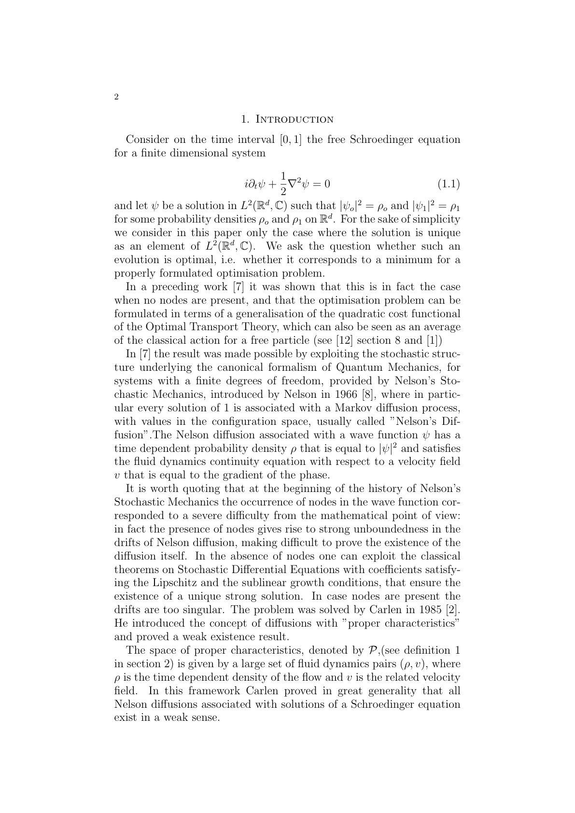
<figcaption class="paper-figure-caption"><b>Fig 1.</b> Low-resolution page preview, page 2</figcaption>
</figure>
<figure class="paper-figure-card">
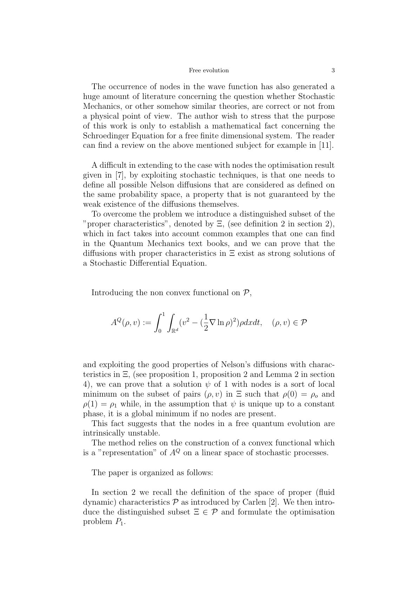
<figcaption class="paper-figure-caption"><b>Fig 2.</b> Low-resolution page preview, page 3</figcaption>
</figure>
<figure class="paper-figure-card">
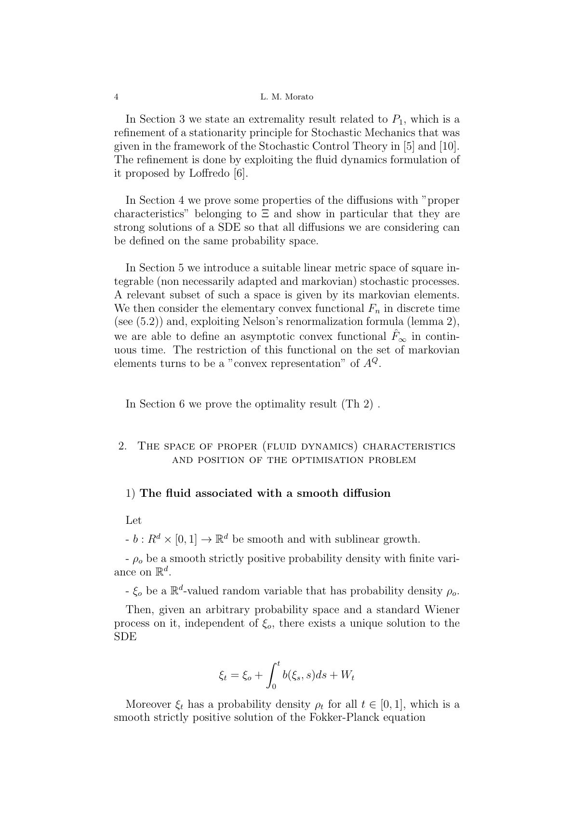
<figcaption class="paper-figure-caption"><b>Fig 3.</b> Low-resolution page preview, page 4</figcaption>
</figure>
<figure class="paper-figure-card">
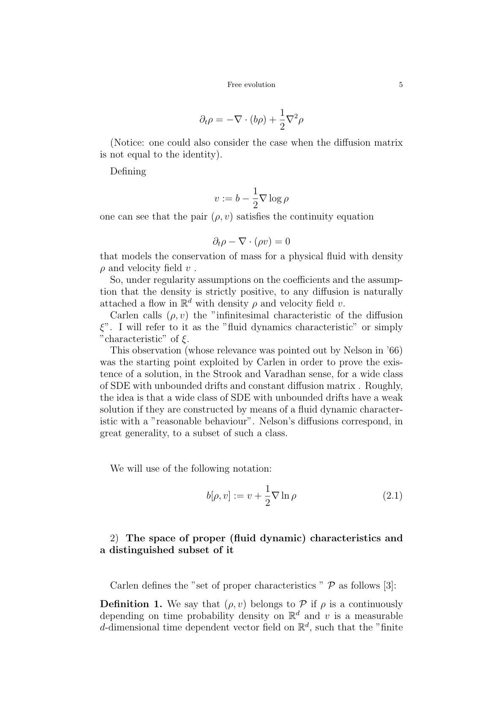
<figcaption class="paper-figure-caption"><b>Fig 4.</b> Low-resolution page preview, page 5</figcaption>
</figure>
<figure class="paper-figure-card">
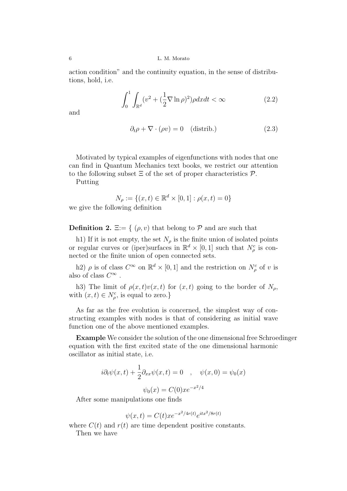
<figcaption class="paper-figure-caption"><b>Fig 5.</b> Low-resolution page preview, page 6</figcaption>
</figure>
</div>

<p><strong>Summary.</strong> The paper investigates the optimality of the free time evolution for a quantum wave function when its initial and final probability densities are fixed. By formulating this as an optimal transport problem, it shows that while the evolution is globally optimal without nodes, the presence of nodes renders the minimum only local, suggesting inherent instability in such configurations.</p>
<p><strong>Why it may be interesting.</strong> This work provides a deep variational characterization of free quantum evolution by linking it to optimal transport theory. The distinction between global minima (no nodes) and local minima (nodes present) offers novel insights into the stability of quantum states in open or constrained systems.</p>
<details>
<summary>Detailed structure</summary>
<p><strong>Main problem.</strong> The central problem is determining whether the free evolution of a quantum wave function, constrained by fixed initial and final probability densities, corresponds to an optimal path in a variational sense.</p>
<p><strong>Main result.</strong> The free evolution minimizes a generalized action functional (related to quadratic optimal transport cost) when no nodes are present; however, the presence of nodes suggests intrinsic instability for this minimum.</p>
<p><strong>Method.</strong> The analysis uses techniques from Optimal Transport Theory and Stochastic Mechanics, formulating the problem as minimizing an action functional $AQ(
ho, v)$ derived from necessary conditions for extremality (Hamilton-Jacobi equations).</p>
<p><strong>Model / system.</strong> The system is governed by the free Schrödinger equation in finite dimensions. The mathematical framework relates the quantum evolution to a diffusion process whose density $
ho$ and current $v$ are analyzed.</p>
<p><strong>Key observables.</strong> Probability density $
ho(x, t) = |\psi(x, t)|^2$, associated velocity field $v(x, t)$, and the action functional $AQ(
ho, v)$.</p>
<p><strong>Important parameters / regimes.</strong> The time interval $[0, 1]$ and the boundary conditions defined by fixed initial ($
ho_0$) and final ($
ho_1$) moduli.</p>
<p><strong>Assumptions / limitations.</strong> Assumes $\psi$ is unique up to a constant phase; handling nodes requires restricting analysis to a subset $\Xi$ where strong solutions of the associated SDE exist.</p>
<p><strong>Figures summary.</strong> Not specified by notes, but the structure suggests proofs involving functional minimization and convergence arguments using sequences of approximations.</p>
<p><strong>Paper structure.</strong> The paper proceeds by defining the relevant state space ($\Xi$), deriving necessary conditions for extremality via calculus of variations (leading to HJM equations), establishing the connection to stochastic processes, and finally proving the optimality theorem through convex functional analysis and limiting procedures.</p>
</details>
<details>
<summary>Abstract</summary>
<p>Extending and refining a preceding work, the free evolution of a quantum wave function, with fixed initial and final modulus, is considered in the general case where nodes are allowed. The method is based on considering a suitable simple functional related to the quadratic optimal transport cost in discrete time. Under reasonable assumptions it is shown that, if nodes are present, the free evolution of the wave function with fixed initial and final modulus is a sort of local minimum. If no nodes are present the minimum is global, suggesting intrinsic instability of the nodes in a free quantum evolution.</p>
</details>
<p><sub><a href="#top">↑ back to top</a></sub></p>

<p><a id="paper-2607.09477"></a></p>
<h3 id="playing-bayesian-games-better-with-separable-quantum-states-than-with-any-classical-correlation"><a href="http://arxiv.org/abs/2607.09477v1">Playing Bayesian games better with separable quantum states than with any classical correlation</a></h3>
<p><strong>Authors:</strong> Yaqing Xy Wang, Giannicola Scarpa, Andreas Winter<br>
<strong>Type:</strong> theory · <strong>Category:</strong> other · <strong>PDF:</strong> <a href="https://arxiv.org/pdf/2607.09477v1">https://arxiv.org/pdf/2607.09477v1</a><br>
<strong>Analysis basis:</strong> full PDF text, analyzed in chunks
<strong>Topic relevance:</strong> <code>entanglement &amp; information structure</code> <strong>2/5</strong> · <code>Keldysh / 2PI / non-Gaussian methods</code> <strong>1/5</strong> · <code>correlated / nonlocal dissipation</code> <strong>1/5</strong> · <code>quantum measurements</code> <strong>1/5</strong></p>
<div class="figure-strip-hint">↔ Scroll figures horizontally</div>
<div class="paper-figures-scroll">
<figure class="paper-figure-card">
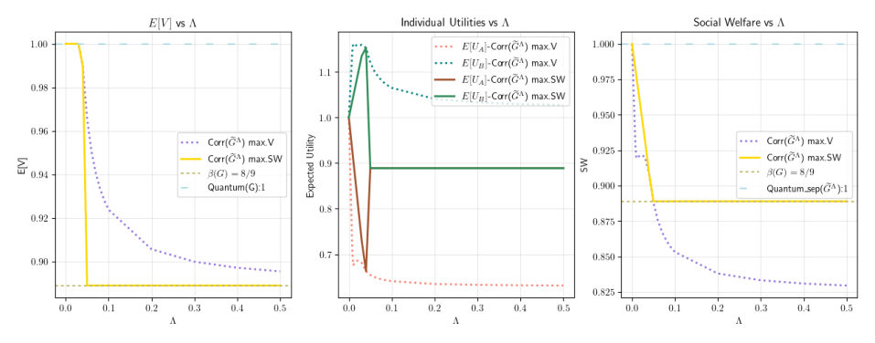
<figcaption class="paper-figure-caption"><b>Fig 1.</b> FIG. 1. Left: Magic square game score for correlated equilibria optimized for original game score and social welfare of modified game, all compared to classical bound of 8</figcaption>
</figure>
<figure class="paper-figure-card">
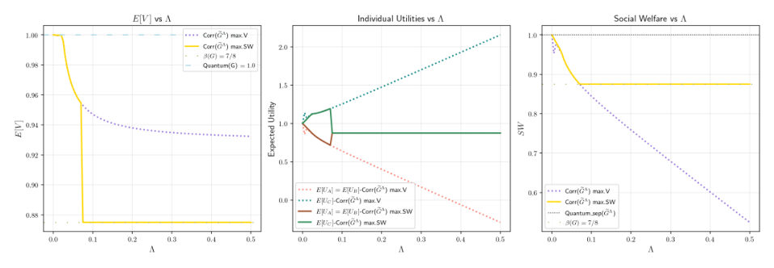
<figcaption class="paper-figure-caption"><b>Fig 2.</b> FIG. 2. Left: Original GHZ game score for all players at correlated equilibria. Classical bound for the game is 7</figcaption>
</figure>
<figure class="paper-figure-card">
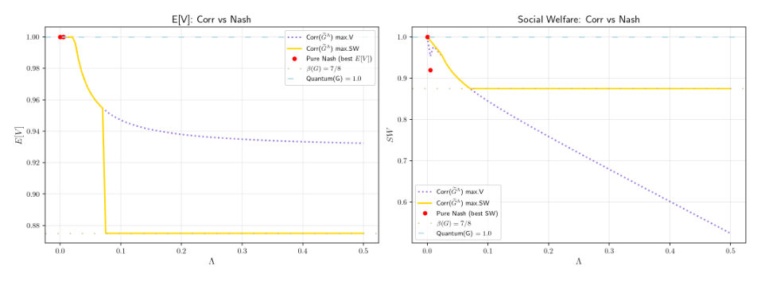
<figcaption class="paper-figure-caption"><b>Fig 3.</b> FIG. 3. Left: GHZ score compared among Nash and correlated equilibria of the modified game. Two pure Nash equilibria exist around λ = 0, denoted with red dots. Right: Social welfare comparison.</figcaption>
</figure>
<figure class="paper-figure-card">
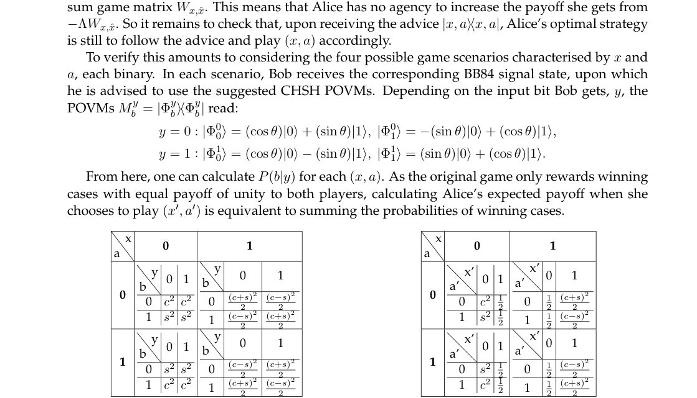
<figcaption class="paper-figure-caption"><b>Fig 4.</b> FIG. 4. Left: P(b|y) calculated for each (x, a) by applying Bob’s suggested set of POVMs on the corresponding |φa|x⟩⟨φa|x|. Right: V (a′, x′, b, y), the expected payoff for Alice when she plays (x′, a′) while the advice is (x, a). This calculation utilizes the prior (uniform) distribution for Bob’s input y: Pr(y = 0) = Pr(y = 1) = 1</figcaption>
</figure>
<figure class="paper-figure-card">
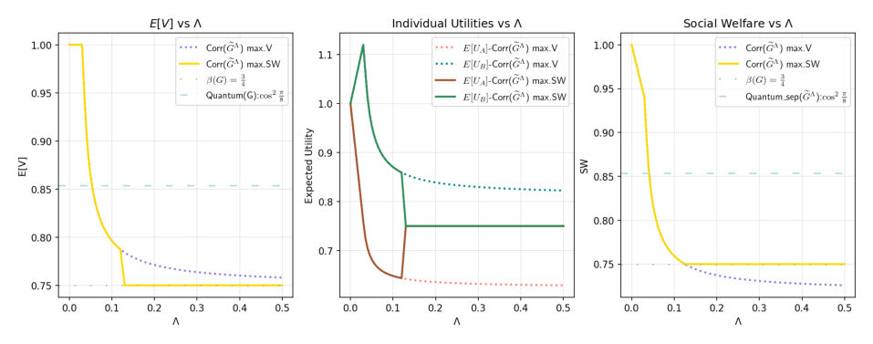
<figcaption class="paper-figure-caption"><b>Fig 5.</b> FIG. 5. Left: CHSH score of ^ CHSH Λ correlated equilibria compared to β(CHSH)= 3/4 and the quantum</figcaption>
</figure>
</div>

<p><strong>Summary.</strong> This theoretical paper explores quantum advantages in Bayesian games by comparing equilibria derived from classical versus separable quantum correlations. It proves that these local quantum states can achieve better outcomes than any classically correlated strategy, even when the game involves conflicting interests. This advances the understanding of non-classical resources beyond simple entanglement.</p>
<p><strong>Why it may be interesting.</strong> While not directly about AMO systems, the rigorous mathematical tools developed for quantifying non-local correlations in game theory are highly relevant to understanding resource theories in open quantum systems or multipartite entanglement verification.</p>
<details>
<summary>Detailed structure</summary>
<p><strong>Main problem.</strong> The research investigates how different types of correlations (classical vs. quantum) affect the equilibria achieved by independent agents in Bayesian games of incomplete information.</p>
<p><strong>Main result.</strong> The paper demonstrates that even separable quantum states can generate new, genuinely quantum equilibria in competitive Bayesian games that yield higher social welfare than any equilibrium achievable using only classical correlations.</p>
<p><strong>Method.</strong> The analysis uses game theory frameworks (Nash, Correlated Equilibria) combined with quantum information tools to compare the set of possible joint probability distributions derived from local vs. quantum measurements.</p>
<p><strong>Model / system.</strong> The model is a general Bayesian game involving multiple players and incomplete information about their types. The correlation structure is modeled using quantum states (separable vs. entangled) acting on the players' shared Hilbert space.</p>
<p><strong>Key observables.</strong> Social Welfare (SW), expected utility for individual players, and the comparison of equilibrium sets ($    ext{Corr}(G)$ vs. $ ext{QuSEP}(G)$).</p>
<p><strong>Important parameters / regimes.</strong> The structure of the game itself, including payoff functions and prior distributions $p(t)$. Specific examples use parameters related to CHSH inequalities.</p>
<p><strong>Assumptions / limitations.</strong> The core assumption is that separable quantum correlations are sufficient to demonstrate a quantum advantage in competitive settings, moving beyond previous reliance on full entanglement.</p>
<p><strong>Figures summary.</strong> Figures compare various equilibrium scores (e.g., CHSH scores) against classical limits ($eta(G)$), showing separations between correlated and Nash equilibria when quantum strategies are employed.</p>
<p><strong>Paper structure.</strong> The paper builds by first establishing the general framework of Bayesian games, then comparing correlation types (classical vs. quantum), and finally applying these concepts to specific examples like modified CHSH games to quantify the advantage.</p>
</details>
<details>
<summary>Abstract</summary>
<p>Bayesian games, also known as games of incomplete information, are a fruitful arena for exploring the impact of correlations on a set of independent agents (players) via the game equilibria to which they give rise. It was realised some time ago that quantum states shared between the players can lead to new and beneficial equilibria, compared to classical correlation. While until now examples of this effect required an entangled state, here we show that even separable states can create new, genuinely quantum equilibria in games, that are advantageous with respect to all classically correlated equilibria. This shows that non-classical correlations beyond entanglement are indeed a resource, even in otherwise entirely classical situations. Our result brings quantum advantage in games significantly closer to possible realisation.</p>
</details>
<p><sub><a href="#top">↑ back to top</a></sub></p>

<p><a id="paper-2607.09162"></a></p>
<h3 id="quaternary-squeeze-quantum-identity-authentication-direction-scaling-security-via-single-mode-squeezed-light"><a href="http://arxiv.org/abs/2607.09162v1">Quaternary-Squeeze Quantum Identity Authentication: Direction-Scaling Security via Single-Mode Squeezed Light</a></h3>
<p><strong>Authors:</strong> Zhipeng Chen, Haolun Tang, Xiao-Qi Xiao, Li-Hua Gong<br>
<strong>Type:</strong> theory · <strong>Category:</strong> quantum information and computing · <strong>PDF:</strong> <a href="https://arxiv.org/pdf/2607.09162v1">https://arxiv.org/pdf/2607.09162v1</a><br>
<strong>Analysis basis:</strong> full PDF text, analyzed in chunks
<strong>Topic relevance:</strong> <code>entanglement &amp; information structure</code> <strong>2/5</strong> · <code>interference shaping light</code> <strong>1/5</strong> · <code>quantum measurements</code> <strong>1/5</strong> · <code>quantum optics experiment</code> <strong>1/5</strong></p>
<div class="figure-strip-hint">↔ Scroll figures horizontally</div>
<div class="paper-figures-scroll">
<figure class="paper-figure-card">
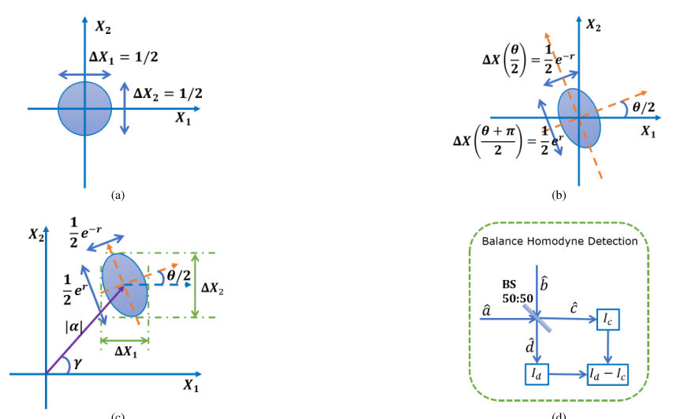
<figcaption class="paper-figure-caption"><b>Fig 1.</b> FIG. 1. Phase-space pictures of (a) vacuum state, (b) squeezed vacuum state with squeezing in X(θ/2), (c) squeezed coherent state with squeezing in X(θ/2), and (d) schematic of balanced homodyne detection.</figcaption>
</figure>
<figure class="paper-figure-card">
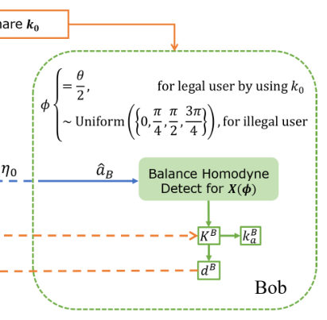
<figcaption class="paper-figure-caption"><b>Fig 2.</b> FIG. 2. Schematic diagram of the quantum identity authentication based on single-mode squeezed light field</figcaption>
</figure>
<figure class="paper-figure-card">
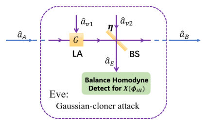
<figcaption class="paper-figure-caption"><b>Fig 3.</b> FIG. 3. Schematic diagram of Gaussian-cloner attack performed by Eve.</figcaption>
</figure>
<figure class="paper-figure-card">
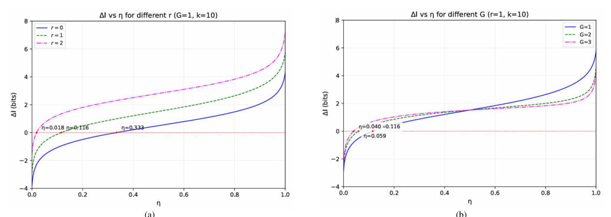
<figcaption class="paper-figure-caption"><b>Fig 4.</b> FIG. 4. The correlation between the secret information ratio ∆I and the transmission efficiency η for (a) different squeezing parameters r (G = 1, k = 10) and (b) different amplifier gains G (r = 1, k = 10).</figcaption>
</figure>
<figure class="paper-figure-card">
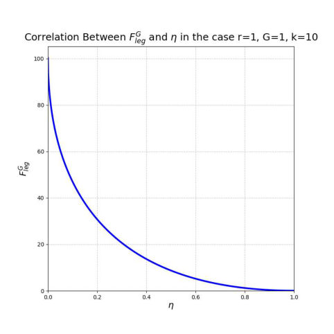
<figcaption class="paper-figure-caption"><b>Fig 5.</b> FIG. 5. The secret information ratio ∆I varies with η.</figcaption>
</figure>
</div>

<p><strong>Summary.</strong> This paper proposes a novel Quantum Identity Authentication protocol leveraging the unique noise reduction features of single-mode squeezed light. By implementing a four-direction squeezing scheme, the authors significantly boost security against eavesdropping attacks compared to existing methods. The analysis confirms that this approach provides quantifiable security advantages while remaining practical for implementation.</p>
<p><strong>Why it may be interesting.</strong> This work is highly relevant to quantum optics and open quantum systems as it provides a concrete, theoretically rigorous protocol for secure quantum key distribution/authentication using non-Gaussian resources (squeezed light) whose noise properties are precisely modeled.</p>
<details>
<summary>Detailed structure</summary>
<p><strong>Main problem.</strong> To develop a highly secure Quantum Identity Authentication (QIA) protocol that resists eavesdropping by exploiting non-classical properties of squeezed light.</p>
<p><strong>Main result.</strong> The proposed four-direction squeezing approach halves the eavesdropper's guessing probability and increases the fidelity gap by 29% compared to binary methods, enhancing security without extra hardware.</p>
<p><strong>Method.</strong> Security is analyzed using both a fidelity parameter (F) for detecting spoofing attacks and a secret information ratio ($\Delta I$) derived from mutual information calculations to quantify resistance against eavesdropping.</p>
<p><strong>Model / system.</strong> The system utilizes single-mode light fields in the form of quadrature squeezed coherent states, measured via balanced homodyne detection. The protocol involves encoding secrets using squeezing parameters ($r$) and angles ($    heta$).</p>
<p><strong>Key observables.</strong> Fidelity parameter (F), Secret Information Ratio ($\Delta I$), Quadrature variances $\langle[\Delta\hat{X}(\varphi)]^2
angle$.</p>
<p><strong>Important parameters / regimes.</strong> Squeezing parameter ($r$), transmission efficiency ($\eta$), amplifier gain ($G$), and the number of squeezing directions (four-directional).</p>
<p><strong>Assumptions / limitations.</strong> The protocol assumes Alice acts as a reliable server, Bob is the client, and security analysis relies on assuming independent/uniform selection of eavesdropper angles for averaging.</p>
<p><strong>Figures summary.</strong> Figures illustrate phase-space representations of light states (vacuum, squeezed vacuum), schematic setups for QIA, and plots showing how security metrics ($\Delta F$ or $\Delta I$) are enhanced by increasing squeezing ($r$) or using the quaternary basis.</p>
<p><strong>Paper structure.</strong> The paper introduces the need for secure QIA, details the physical model using quadrature squeezed states, develops the authentication mechanism involving key encoding and measurement, analyzes security via fidelity and mutual information ratios, and concludes with performance comparisons showing the advantage of the four-direction approach.</p>
</details>
<details>
<summary>Abstract</summary>
<p>Quantum identity authentication (QIA) has emerged as a crucial technology for secure communication systems, particularly in the burgeoning era of quantum communications. This paper proposes a novel QIA protocol based on non-classical characteristics of squeezed light fields. By exploiting quantum noise reduction properties of quadrature squeezed coherent states, the protocol fundamentally thwarts eavesdropping attempts by Heisenberg-limited uncertainty constraints. The fidelity parameter for decoy states is utilized to detect spoofing attacks, and the dynamic key update mechanism fundamentally eliminates vulnerabilities caused by key reuse. Security information ratio analysis shows that the protocol is able to resist Gaussian-cloner attacks and detect eavesdropping. Moreover, the security threshold can be further enhanced with higher squeezing, allowing tunable protection levels adaptable to different threat scenarios. Compared with binary-squeezed protocols, our proposed four-direction (quaternary-dimensional) squeezing halves the eavesdropper's guessing probability and enlarges the fidelity gap by 29% tightening the discrimination threshold without relying on extra hardware, thus facilitating practical implementation.</p>
</details>
<p><sub><a href="#top">↑ back to top</a></sub></p>

<p><a id="paper-2607.08819"></a></p>
<h3 id="the-apparatus-strikes-back-momentum-conservation-and-the-cost-of-spatial-superpositions"><a href="http://arxiv.org/abs/2607.08819v1">The Apparatus Strikes Back: Momentum Conservation and the Cost of Spatial Superpositions</a></h3>
<p><strong>Authors:</strong> Lucas C. Céleri, Diogo O. Soares-Pinto, Daniel A. Turolla Vanzella<br>
<strong>Type:</strong> theory · <strong>Category:</strong> other · <strong>PDF:</strong> <a href="https://arxiv.org/pdf/2607.08819v1">https://arxiv.org/pdf/2607.08819v1</a><br>
<strong>Analysis basis:</strong> full PDF text, analyzed in chunks
<strong>Topic relevance:</strong> <code>quantum measurements</code> <strong>2/5</strong> · <code>entanglement &amp; information structure</code> <strong>1/5</strong> · <code>interference shaping light</code> <strong>1/5</strong> · <code>measurement-induced transitions</code> <strong>1/5</strong></p>
<div class="figure-strip-hint">↔ Scroll figures horizontally</div>
<div class="paper-figures-scroll">
<figure class="paper-figure-card">
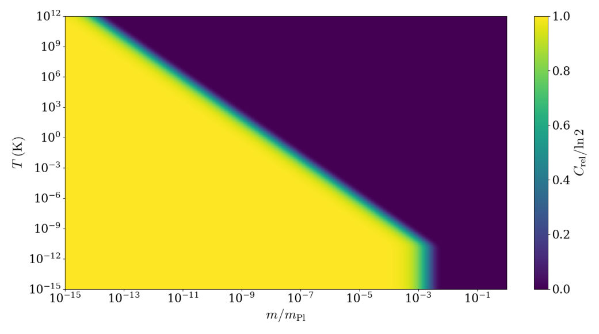
<figcaption class="paper-figure-caption"><b>Fig 1.</b> FIG. 1. Normalized relative entropy of coherence, Crel/ ln 2, of the reduced state of the particle as a function of the particle mass, expressed in units of the Planck mass, and of the temperature T. We fix M = 100 kg, d = 1 µm, and ω/(2π) = 1 Hz. The transition from the high-coherence (yellow) to the low-coherence (dark-blue) region reflects the increasing distinguishability of the apparatus recoil states associated with the two branches of the spatial superposition of the particle. At any temperature, coherence decreases as the particle mass increases, illustrating the growing impact of particle-apparatus entanglement imposed by momentum conservation. But notice also the existence of a...</figcaption>
</figure>
<figure class="paper-figure-card">
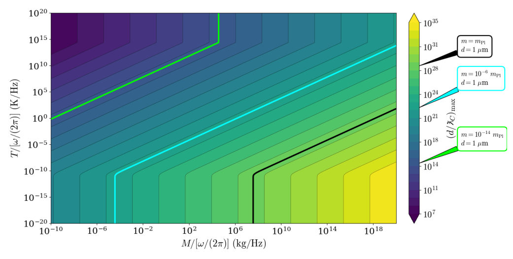
<figcaption class="paper-figure-caption"><b>Fig 2.</b> FIG. 2. Momentum-conservation constraint on the preparation of coherent spatial superpositions. The figure shows the contour plot of the r.h.s. of (13), which imposes an upper bound on the separation d (in units of reduced Compton wavelength, λC) of a coherent spatial superposition of a particle of mass m. The figure can be used in two ways. Given the parameters (M, T, ω) related to the apparatus setup, they mark a point in the figure, which falls on top of a contour whose value can be read from the color bar. Only state separations d/λC smaller than this value have a chance of being coherently superposed by such an apparatus. Alternatively, once the experimentalist establishes a target...</figcaption>
</figure>
</div>

<p><strong>Summary.</strong> The authors derive a universal constraint showing that preparing large spatial superpositions of massive particles inevitably entangles the particle with the momentum recoil of the apparatus used for splitting. This entanglement causes decoherence in the measured particle state, setting a fundamental lower bound on experimental feasibility based only on conservation laws.</p>
<p><strong>Why it may be interesting.</strong> This work provides a fundamental, model-independent constraint on quantum metrology experiments involving massive objects, linking macroscopic mechanics (momentum conservation) directly to microscopic quantum coherence limits. It is crucial reading for anyone designing next-generation matter-wave interferometers or gravity tests.</p>
<details>
<summary>Detailed structure</summary>
<p><strong>Main problem.</strong> The paper identifies a universal constraint on preparing massive particles in coherent spatial superpositions arising purely from momentum conservation when an apparatus is used for splitting.</p>
<p><strong>Main result.</strong> Momentum conservation necessitates that the particle becomes entangled with the apparatus due to recoil, leading to a quantitative lower bound on achievable coherence even for macroscopic setups.</p>
<p><strong>Method.</strong> The analysis uses quantum state evolution operators and calculates the reduced density matrix of the particle by tracing out the apparatus degrees of freedom, quantifying coherence via relative entropy.</p>
<p><strong>Model / system.</strong> The system involves a massive particle ($m$) placed in superposition ($\pm d/2$) using an auxiliary apparatus of mass $M$. The analysis focuses on the entanglement generated between the particle and the apparatus's Center-of-Mass (CM) motion, modeled as harmonic oscillators.</p>
<p><strong>Key observables.</strong> Coherence factor ($\chi_c$), relative entropy of coherence ($C_{rel}$), and the resulting bound relating $m$, $d$, $M$, and $T$.</p>
<p><strong>Important parameters / regimes.</strong> Particle mass ($m$), separation distance ($d$), apparatus mass ($M$), temperature ($T$), and characteristic frequencies ($\omega$). The low-temperature limit yields a temperature-independent constraint.</p>
<p><strong>Assumptions / limitations.</strong> The analysis primarily assumes that only the CM degree of freedom of the apparatus participates in state preparation, ignoring internal vibrational modes (which would tighten the bound).</p>
<p><strong>Figures summary.</strong> Figures illustrate how coherence decreases with increasing particle mass and show contour plots mapping the momentum-conservation constraint on achievable superposition separation ($d/\lambda_C$) based on apparatus parameters.</p>
<p><strong>Paper structure.</strong> The paper establishes the fundamental conservation law, derives the entanglement consequence for the reduced state, quantifies the resulting decoherence bound using CM motion, and finally discusses practical implications, including internal mode excitations and conditions for 'false' coherence loss.</p>
</details>
<details>
<summary>Abstract</summary>
<p>Preparing massive particles in coherent spatial superpositions is a central objective of modern quantum science, motivated by applications ranging from fundamental tests of quantum mechanics and gravity to quantum-enhanced sensing. The experimental difficulty of realizing such superpositions is usually attributed to environmental decoherence mechanisms whose impact depends on the details of the experimental implementation. Here we identify a universal constraint arising from momentum conservation and the quantum nature of the preparation apparatus. Any protocol that places a particle of mass $m$ in a spatial superposition with separation $d$ necessarily entangles the particle with the center-of-mass degree of freedom of the apparatus responsible for the splitting. The resulting recoil displacement, fixed by conservation of the mass dipole moment, reduces the coherence of the particle when the apparatus is not included as part of the quantum system. For an apparatus of mass $M$, preserving coherence requires the recoil displacement to remain smaller than the coherence length of the apparatus center-of-mass state, leading to a quantitative bound expressible as a constraint on its temperature and on how rigidly the apparatus is anchored to the laboratory frame. We analyze the implications of this bound for current matter-wave interferometry experiments, proposals for gravitationally mediated entanglement, and tests of quantum mechanics near the Planck scale. Our main result, which may seem counterintuitive, is that the recoil of even heavy macroscopic apparatuses can pose a surprisingly strong constraint on the coherence of spatial superpositions of particles with masses well below the Planck mass. Finally, we discuss why the resulting limitation should be regarded as a conservative estimate and under which conditions it can be interpreted as an instance of false decoherence.</p>
</details>
<p><sub><a href="#top">↑ back to top</a></sub></p>

<p><a id="paper-2607.08998"></a></p>
<h3 id="shadow-based-noise-fingerprinting-of-simulated-quantum-noise-models"><a href="http://arxiv.org/abs/2607.08998v1">Shadow-Based Noise Fingerprinting of Simulated Quantum Noise Models</a></h3>
<p><strong>Authors:</strong> Vridhi Jain, Lei Zhang<br>
<strong>Type:</strong> both · <strong>Category:</strong> quantum information and computing · <strong>PDF:</strong> <a href="https://arxiv.org/pdf/2607.08998v1">https://arxiv.org/pdf/2607.08998v1</a><br>
<strong>Analysis basis:</strong> full PDF text, analyzed in chunks
<strong>Topic relevance:</strong> <code>QC/QI experiment</code> <strong>2/5</strong> · <code>methods for driven-dissipative</code> <strong>1/5</strong> · <code>quantum measurements</code> <strong>1/5</strong></p>
<div class="figure-strip-hint">↔ Scroll figures horizontally</div>
<div class="paper-figures-scroll">
<figure class="paper-figure-card">

<figcaption class="paper-figure-caption"><b>Fig 1.</b> Fig. 1. Shadow-based noise fingerprinting pipeline consisting of four stages: probe circuit preparation, noisy device execution, randomized shadow measurements, and machine learning classification.</figcaption>
</figure>
<figure class="paper-figure-card">

<figcaption class="paper-figure-caption"><b>Fig 2.</b> Fig. 2. Confusion matrix for the random forest classifier evaluated on the held-out test set across ten noise types.</figcaption>
</figure>
<figure class="paper-figure-card">

<figcaption class="paper-figure-caption"><b>Fig 3.</b> Figure 2 presents the confusion matrix for the random forest classifier evaluated on the held-out test set. Readout error, phase flip, bit flip, and thermal relaxation achieve high per- class accuracy, with the classifier correctly identifying the majority of samples in each of these categories. The primary misclassifications occur between phase damping and thermal relaxation, and between phase-amplitude damping and reset noise, suggesting that these channel pairs produce similar fea- ture signatures under the current measurement protocol. The remaining noise types, including amplitude damping, phase- amplitude damping, and Pauli-asymmetric noise, are classified with moderate accuracy, with...</figcaption>
</figure>
<figure class="paper-figure-card">
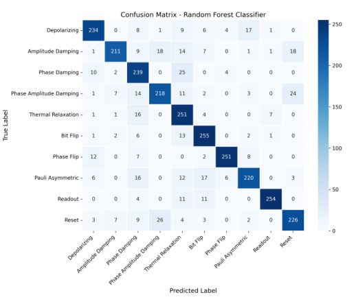
<figcaption class="paper-figure-caption"><b>Fig 4.</b> Figure 3 presents classification accuracy as a function of samples per class for all three classifiers. At 300 samples per class, all three models perform near chance level, achieving accuracies in the range of 0.46-0.49. Accuracy increases con- sistently with dataset size across all classifiers, with random forest and extra trees reaching 0.8426 and 0.8406, respectively, at 1,400 samples per class, while the MLP achieves 0.7925 at the same scale. The ensemble methods maintain comparable performance throughout the scaling curve, with both consis- tently outperforming the MLP baseline at larger dataset sizes.</figcaption>
</figure>
<figure class="paper-figure-card">
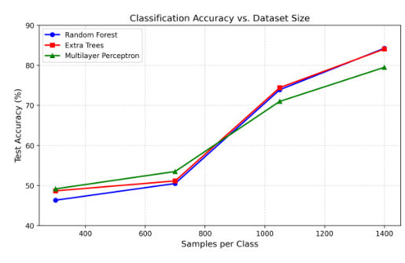
<figcaption class="paper-figure-caption"><b>Fig 5.</b> Fig. 3. Test accuracy as a function of samples per class for random forest, extra trees, and MLP classifiers.</figcaption>
</figure>
</div>

<p><strong>Summary.</strong> This paper introduces a scalable shadow-based pipeline to classify unknown quantum noise channels on 3-qubit systems. It constructs a high-dimensional feature vector from randomized Pauli measurements and employs machine learning classifiers like Random Forest to achieve reliable noise identification. This method bypasses the exponential scaling limitations of traditional tomography, offering a practical tool for near-term quantum hardware calibration.</p>
<p><strong>Why it may be interesting.</strong> This work provides a practical, scalable ML framework for characterizing hardware imperfections in quantum computing devices, which is vital for advancing NISQ algorithms.</p>
<details>
<summary>Detailed structure</summary>
<p><strong>Main problem.</strong> Accurately classifying unknown quantum noise channels is crucial for operating near-term quantum processors, as existing methods scale exponentially with system size.</p>
<p><strong>Main result.</strong> A random forest classifier achieved a high test accuracy of 0.8426 and macro F1 score of 0.8437, demonstrating a scalable approach to noise fingerprinting.</p>
<p><strong>Method.</strong> The authors propose a shadow-based pipeline combining structured classical tomography with physics-informed feature engineering on randomized Pauli measurements.</p>
<p><strong>Model / system.</strong> The work focuses on characterizing noise channels applied to simulated 3-qubit probe circuits, utilizing QAOA and simple basis states as probes.</p>
<p><strong>Key observables.</strong> A 279-dimensional feature vector constructed from raw Pauli expectation values and derived observables from randomized measurements.</p>
<p><strong>Important parameters / regimes.</strong> The study is designed for NISQ devices and aims to resolve distinctions between physically similar noise types.</p>
<p><strong>Assumptions / limitations.</strong> The analysis uses simulated Qiskit noise channels, and the current method provides discrete classification rather than continuous parameter estimation.</p>
<p><strong>Figures summary.</strong> Figure 1 illustrates the four stages of the pipeline (probe preparation $
ightarrow$ noisy execution $
ightarrow$ shadow measurements $
ightarrow$ ML classification). Table I summarizes classifier performance metrics.</p>
<p><strong>Paper structure.</strong> The paper details a multi-stage pipeline: first, preparing probe circuits; second, executing them on a noisy simulator to gather randomized Pauli measurement data; third, constructing the high-dimensional feature vector; and finally, applying and benchmarking multiple machine learning classifiers for noise type identification.</p>
</details>
<details>
<summary>Abstract</summary>
<p>Accurate noise classification is essential for operating near-term quantum processors, yet existing approaches, such as quantum process tomography, scale exponentially with system size, limiting their practicality for routine calibration. We propose a scalable noise fingerprinting pipeline that combines structured classical shadow tomography with physics-informed feature engineering to identify noise channels from a fixed set of 3-qubit probe circuits. Each sample is represented by a 279-dimensional feature vector constructed from randomized Pauli measurements and derived observables, designed to resolve physically similar noise channels that produce overlapping signatures under generic measurement sets. We evaluate three classifiers, i.e., random forest, extra trees, and a multilayer perceptron, on a dataset of 14,000 labeled samples spanning 10 noise types. The random forest classifier achieves the highest test accuracy of 0.8426 with a macro F1 score of 0.8437, outperforming both baselines. Confusion analysis reveals that many noise types are classified with high reliability, with the remaining confusions occurring between channels sharing similar physical decay mechanisms, motivating future work on richer probe states and noise parameter estimation.</p>
</details>
<p><sub><a href="#top">↑ back to top</a></sub></p>

<p><a id="paper-2607.09421"></a></p>
<h3 id="short-range-magnetic-order-and-multi-stage-phase-transitions-in-the-easy-plane-van-der-waals-magnet-crclmath583math"><a href="http://arxiv.org/abs/2607.09421v1">Short-range magnetic order and multi-stage phase transitions in the easy-plane van der Waals magnet CrCl$_3$</a></h3>
<p><strong>Authors:</strong> T. B. Mazitov, M. I. Panin, A. S. Pakhomov, M. V. Bakhmetiev, E. O. Chiglintsev, A. I. Chernov, A. A. Katanin<br>
<strong>Type:</strong> both · <strong>Category:</strong> strongly correlated electrons · <strong>PDF:</strong> <a href="https://arxiv.org/pdf/2607.09421v1">https://arxiv.org/pdf/2607.09421v1</a><br>
<strong>Analysis basis:</strong> full PDF text, analyzed in chunks
<strong>Topic relevance:</strong> <code>analog quantum simulation</code> <strong>2/5</strong> · <code>Keldysh / 2PI / non-Gaussian methods</code> <strong>1/5</strong> · <code>spintronics-quantum-optics interface</code> <strong>1/5</strong></p>
<div class="figure-strip-hint">↔ Scroll figures horizontally</div>
<div class="paper-figures-scroll">
<figure class="paper-figure-card">
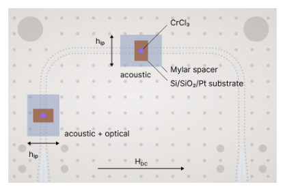
<figcaption class="paper-figure-caption"><b>Fig 1.</b> FIG. 1. The scheme of FMR experiment: geometries with hip perpendicular and parallel to the external DC magnetic field HDC are shown; semi-transparent blue rectangles depict Mylar spacer, brown rectangle show Si/SiO2/Pt substrate, and purple circles represents CrCl3 flake under PC coverage.</figcaption>
</figure>
<figure class="paper-figure-card">
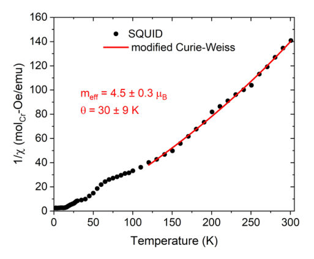
<figcaption class="paper-figure-caption"><b>Fig 2.</b> FIG. 3. Inverse magnetic susceptibility; fit shows modified Curie-Weiss law at high temperatures.</figcaption>
</figure>
<figure class="paper-figure-card">
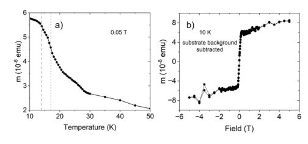
<figcaption class="paper-figure-caption"><b>Fig 3.</b> FIG. 2. SQUID measurements: a) temperature dependence of the sample magnetic moment under 0.05 T in-plane field: dashed line shows the Neel temperature, and dotted line dis- plays the Curie temperature; b) isothermal hysteresis loop at 10 K. The field is directed in-plane; magnetic field of about 0.2 T is needed to polarize spins.</figcaption>
</figure>
<figure class="paper-figure-card">
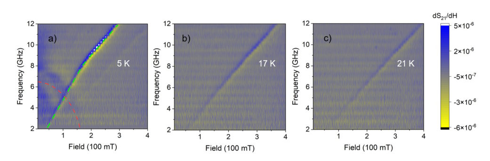
<figcaption class="paper-figure-caption"><b>Fig 4.</b> FIG. 4. a-c) FMR intensity colormaps measured when hip||HDC at 5 K, 17 K and 21 K; acoustic mode is shown with green dashed line and optical mode with red dashed line on 5 K colormap.</figcaption>
</figure>
<figure class="paper-figure-card">
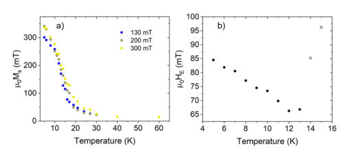
<figcaption class="paper-figure-caption"><b>Fig 5.</b> FIG. 6. Temperature dependence of a) effective magnetiza- tion within the layers; b) interlayer exchange field. Open circles in b) correspond to temperatures T ≥TN (see text).</figcaption>
</figure>
</div>

<p><strong>Summary.</strong> This work comprehensively investigates the complex magnetic phase diagram of CrCl3, a 2D van der Waals magnet. By combining SQUID/FMR experiments with DFT+DMFT theory, the authors map out multi-stage transitions between ferromagnetic and antiferromagnetic states. The findings highlight the crucial role of persistent short-range correlations and temperature-dependent interlayer coupling in determining the material's magnetic behavior.</p>
<p><strong>Why it may be interesting.</strong> The interplay between strong electronic correlations (as modeled by DFT+DMFT) and emergent quantum phenomena like BKT transitions in low-dimensional magnets makes this highly relevant for understanding correlated electron systems beyond simple mean-field treatments.</p>
<details>
<summary>Detailed structure</summary>
<p><strong>Main problem.</strong> The study investigates the evolution of spin correlations and the nature of multi-stage magnetic transitions in the quasi-two-dimensional easy-plane van der Waals magnet CrCl3.</p>
<p><strong>Main result.</strong> The research confirms a complex magnetic phase diagram involving crossover to a spin polarized (SP) phase followed by an antiferromagnetic (AFM) ground state, while theoretical work predicts robust short-range correlations persisting well above ordering temperatures.</p>
<p><strong>Method.</strong> The study combines experimental techniques like broadband FMR spectroscopy and DC SQUID magnetometry with advanced theoretical calculations using non-local Dynamical Mean-Field Theory (DFT+DMFT).</p>
<p><strong>Model / system.</strong> The physical system is the van der Waals magnet CrCl3, which exhibits easy-plane XY anisotropy. The analysis focuses on the competition between intra-layer and inter-layer magnetic exchange interactions.</p>
<p><strong>Key observables.</strong> Magnetization (M(T)), inverse susceptibility (1/χ(T)), resonant frequencies in FMR, and the magnetic correlation length ($\xi$).</p>
<p><strong>Important parameters / regimes.</strong> Transition temperatures ($T_{SP} \approx 17 	ext{ K}$, $T_N \approx 14 	ext{ K}$), Weiss temperature ($    heta$), and exchange coupling strengths ($J_1$, $J_{\perp}$).</p>
<p><strong>Assumptions / limitations.</strong> The DFT calculations are noted to be performed without considering spin-orbit interaction, and the BKT formula is applied based on specific structural phases.</p>
<p><strong>Figures summary.</strong> Figures illustrate SQUID magnetization curves showing magnetic transitions (cusps at 14 K), FMR intensity maps demonstrating mode evolution with temperature, and plots detailing the temperature dependence of exchange interactions and correlation lengths.</p>
<p><strong>Paper structure.</strong> The paper progresses by first establishing experimental observations of multi-stage transitions using magnetometry and resonance. It then uses theoretical modeling (DFT+DMFT) to explain the persistence of short-range order and the temperature-driven crossover in interlayer coupling, culminating in a comprehensive magnetic phase diagram.</p>
</details>
<details>
<summary>Abstract</summary>
<p>We investigate the evolution of spin correlations and the nature of the multi-stage magnetic transition in the quasi-two-dimensional easy-plane van der Waals magnet $\rm CrCl_3$. By combining broadband ferromagnetic resonance (FMR) spectroscopy and DC SQUID magnetometry on mechanically exfoliated micro-flakes with non-local dynamical mean-field theory (DFT+DMFT) calculations, we analyze both long- and short range magnetic order in CrCl$_3$. Experimentally, SQUID and FMR measurements confirm the presence of the crossover to a spin polarized phase with the subsequent transition into an antiferromagnetic ground state upon cooling, but show robust short-range correlations at temperatures far above the magnetic ordering temperatures. Theoretically, we show the existence of highly stable local magnetic moments at room temperature, with a giant room temperature lifetime $τ$ of 130--300 ps due to a wide Mott bandgap. Below room temperature, a rapid growth of the in-plane correlation length $ξ$ signals the formation of strong short range magnetic order consistent with the experimental observations. We also obtain a temperature-driven crossover of the interlayer exchange interaction, which changes from positive (ferromagnetic) at high temperatures to negative (antiferromagnetic) in the low-temperature ordered phase.</p>
</details>
<p><sub><a href="#top">↑ back to top</a></sub></p>

<p><a id="paper-2607.09151"></a></p>
<h3 id="hybrid-quantum-and-classical-workload-management-with-graph-based-scheduling"><a href="http://arxiv.org/abs/2607.09151v1">Hybrid Quantum and Classical Workload Management with Graph-based Scheduling</a></h3>
<p><strong>Authors:</strong> Vanessa Sochat, Daniel Milroy<br>
<strong>Type:</strong> both · <strong>Category:</strong> quantum information and computing · <strong>PDF:</strong> <a href="https://arxiv.org/pdf/2607.09151v1">https://arxiv.org/pdf/2607.09151v1</a><br>
<strong>Analysis basis:</strong> full PDF text, analyzed in chunks
<strong>Topic relevance:</strong> <code>QC/QI experiment</code> <strong>2/5</strong> · <code>methods for driven-dissipative</code> <strong>1/5</strong></p>
<div class="figure-strip-hint">↔ Scroll figures horizontally</div>
<div class="paper-figures-scroll">
<figure class="paper-figure-card">
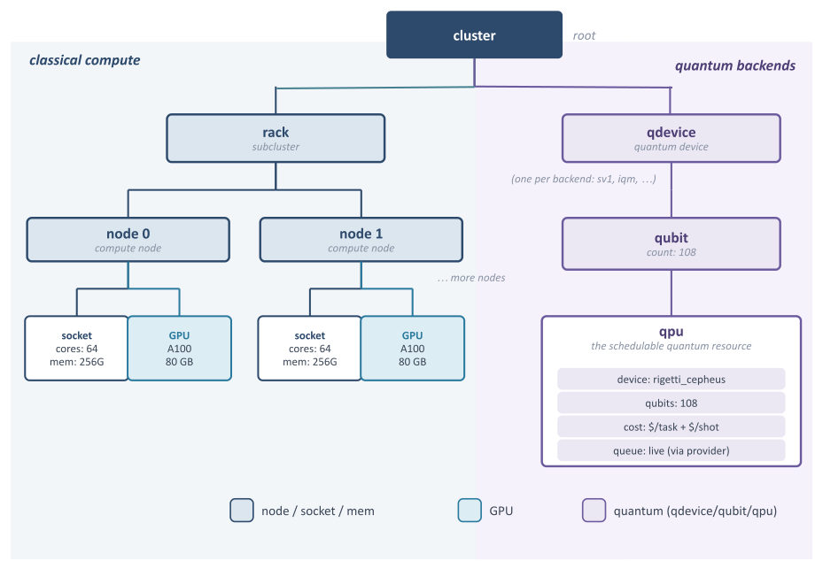
<figcaption class="paper-figure-caption"><b>Fig 1.</b> Figure 2: Hybrid modeling of classical and quantum resources in the Fluxion resource graph. A quantum device is modeled at the same level as a rack, and job requests for work correspond to a traversal in the graph. Constraints are used to limit search to a resource class.</figcaption>
</figure>
<figure class="paper-figure-card">
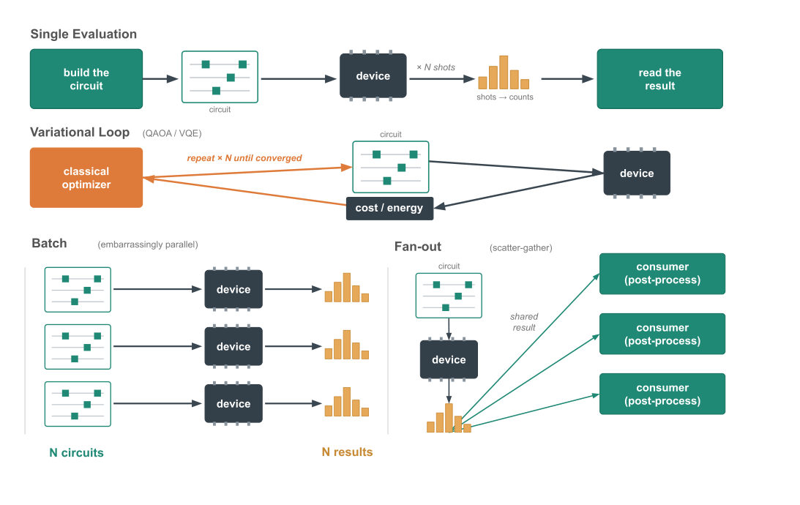
<figcaption class="paper-figure-caption"><b>Fig 2.</b> Figure 3: Hybrid quantum and classical application designs. The single evaluation (top), when a circuit is run and post-processed, forms a simple, single execution unit that is the basis for more complex designs. The variational design (second row) maps this unit into a cycle, receiving back results, and adjusting parameters to run again until convergence. The batch pattern (bottom left) runs many single evaluations in parallel to generate the equivalent number of results, and a fan-out pattern (bottom right) provides one quantum result for many classical consumers. These designs pair with the scale, frequency, and coordination of execution, form the basis for hybrid quantum scheduler...</figcaption>
</figure>
<figure class="paper-figure-card">
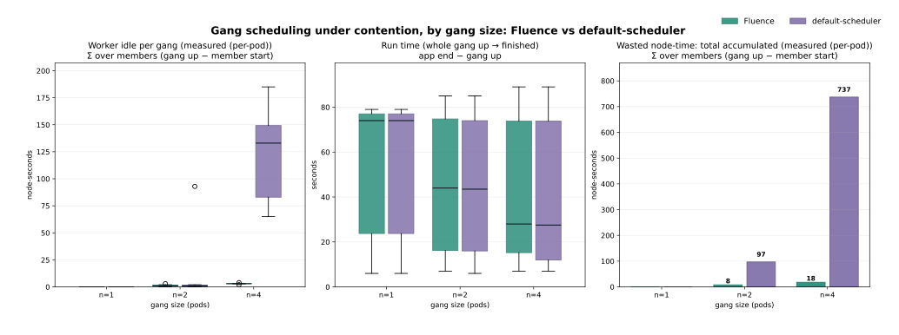
<figcaption class="paper-figure-caption"><b>Fig 3.</b> Figure 4: Gang scheduling for 18 gangs of varying sizes across 3 applications for each of fluence and the default-scheduler. Worker idle time increases with size (left panel), and accumulated node time (right panel) represents poor resource utilization across workers in the cluster. There are no differences in application running times once all members of gangs are ready (middle panel).</figcaption>
</figure>
<figure class="paper-figure-card">
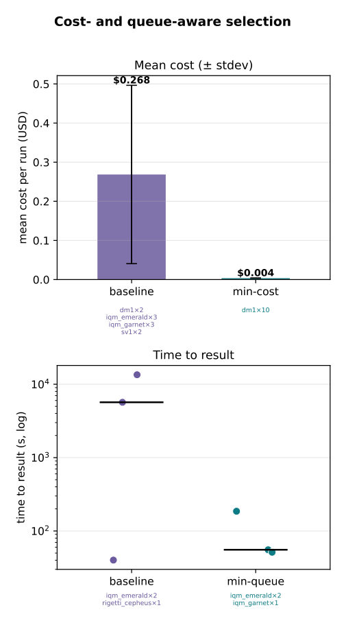
<figcaption class="paper-figure-caption"><b>Fig 4.</b> Figure 5: Policy aware selection. Requesting Fluence to select a minimum cost backend easily clusters all points around a trivial cost close to zero (top panel). Asking Fluence to select minimize queue depth leads to a faster end-to-end time to complete the work (bottom panel).</figcaption>
</figure>
<figure class="paper-figure-card">
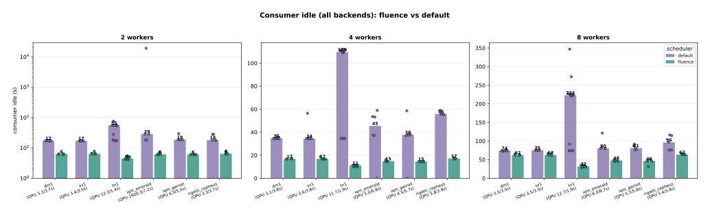
<figcaption class="paper-figure-caption"><b>Fig 5.</b> Figure 6: Worker idle time across quantum simulators or devices, compared to number of workers. As expected, the idle time increases with the size of the job</figcaption>
</figure>
</div>

<p><strong>Summary.</strong> This work addresses the significant orchestration challenge of running hybrid quantum-classical computations in cloud environments by introducing Fluence, a Kubernetes scheduler plugin. It solves the 'two-queue problem' by treating remote QPUs as first-class resources in a scheduling graph. The results demonstrate massive improvements in efficiency, cost reduction, and time-to-result compared to standard schedulers.</p>
<p><strong>Why it may be interesting.</strong> While highly focused on infrastructure and scheduling rather than fundamental physics, the paper's ability to manage complex resource dependencies is crucial for enabling future quantum algorithms that require tight coupling between classical optimization loops and quantum hardware execution.</p>
<details>
<summary>Detailed structure</summary>
<p><strong>Main problem.</strong> The primary challenge is orchestrating complex hybrid quantum-classical workflows within modern HPC environments that incorporate remote Quantum Processing Units (QPUs). This introduces a 'two-queue problem' due to the external queue of the quantum device.</p>
<p><strong>Main result.</strong> The authors present Fluence, a Kubernetes scheduler plugin that successfully manages this complexity by enabling atomic gang scheduling, synchronizing classical workers with quantum readiness, and optimizing resource selection based on cost and queue depth.</p>
<p><strong>Method.</strong> They developed a graph-based scheduler (Fluxion) to model QPUs as first-class, attributed resources within the cloud-native Kubernetes environment. This allows for informed placement decisions that coordinate disparate computational stages.</p>
<p><strong>Model / system.</strong> The system involves hybrid quantum-classical workloads running on platforms like AWS Braket and real QPUs, managed via a Kubernetes scheduler plugin (Fluence). The scheduling model treats classical compute nodes and remote QPU backends as interconnected resources in a resource graph.</p>
<p><strong>Key observables.</strong> Wasted node-time from partial gang placement, worker idle time reduction (up to 5x), mean per-run cost reduction ($\sim$70x), and time-to-result improvement (hours to minutes).</p>
<p><strong>Important parameters / regimes.</strong> Queue depth of the remote QPU backend, computational workload type (e.g., VQA loops), and resource cost metrics.</p>
<p><strong>Assumptions / limitations.</strong> The solution assumes that quantum devices can be modeled as first-class resources within a graph structure, allowing scheduling policies to query their availability alongside classical hardware.</p>
<p><strong>Figures summary.</strong> Figures illustrate the 'two queue problem' concept, the hierarchical modeling of hybrid resources in the Fluxion graph, and policy selection trade-offs between minimizing cost versus minimizing queue depth.</p>
<p><strong>Paper structure.</strong> The paper first defines the technical challenge (the two-queue problem) inherent in cloud-native quantum integration. It then introduces Fluence as the solution, detailing its mechanisms for atomic gang placement, synchronization primitives, and backend selection policies. Finally, it validates these methods across multiple real-world scenarios.</p>
</details>
<details>
<summary>Abstract</summary>
<p>High Performance Computing (HPC) centers are expanding to encompass resources that extend beyond traditional computing. By extending resources to quantum computing, hybrid quantum-classical workflows tackle complex optimization problems that have never before been possible. However, integrating quantum processing units (QPUs) into cloud-native and scientific workload managers presents a unique orchestration challenge: remote quantum devices introduce a second, external queue -- a two-queue problem -- alongside the queue owned by the traditional scheduler. In this work we present Fluence, a Kubernetes scheduler plugin backed by the Fluxion graph-based scheduler, that enables informed, gang-scheduled placement for quantum-classical workloads and custom resources. We evaluate Fluence across three scenarios using AWS Braket simulators and real QPUs. First, under node contention, Fluence's atomic gang placement all but eliminates the wasted node-time that a default scheduler accrues by partially placing gangs. Second, we introduce a synchronization primitive for the two-queue problem in which a single producer submits a shared quantum task while consumers remain scheduling-gated, reducing worker idle time by roughly 5x under short device queues and by orders of magnitude when a real device queue stretched to hours. Third, cost- and queue-aware backend selection pins the cheapest or shortest-queue device satisfying a workload, cutting mean per-run cost by roughly 70x and time-to-result from hours to under a minute. Together, these results show that quantum-awareness can be added to a cloud-native scheduler without modifying user containers.</p>
</details>
<p><sub><a href="#top">↑ back to top</a></sub></p>

<p><a id="paper-2607.08862"></a></p>
<h3 id="loop-current-orderings-in-sumath593math-two-leg-fermionic-ladder-through-duality-symmetries"><a href="http://arxiv.org/abs/2607.08862v1">Loop-current orderings in SU($N$) two-leg fermionic ladder through duality symmetries</a></h3>
<p><strong>Authors:</strong> M. Habchy, F. Rose, P. Lecheminant<br>
<strong>Type:</strong> theory · <strong>Category:</strong> strongly correlated electrons · <strong>PDF:</strong> <a href="https://arxiv.org/pdf/2607.08862v1">https://arxiv.org/pdf/2607.08862v1</a><br>
<strong>Analysis basis:</strong> full PDF text, analyzed in chunks
<strong>Topic relevance:</strong> <code>analog quantum simulation</code> <strong>2/5</strong> · <code>Keldysh / 2PI / non-Gaussian methods</code> <strong>1/5</strong></p>
<div class="figure-strip-hint">↔ Scroll figures horizontally</div>
<div class="paper-figures-scroll">
<figure class="paper-figure-card">
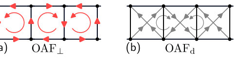
<figcaption class="paper-figure-caption"><b>Fig 1.</b> FIG. 1. (color online) Two possible loop-current ordered phases which spontaneously break the time-reversal symmetry in a two-leg ladder: (a) OAF⊥phase with circulating currents along the plaque- ttes of the ladder (b) OAFd phase with circulating currents along the diagonals of the ladder.</figcaption>
</figure>
<figure class="paper-figure-card">
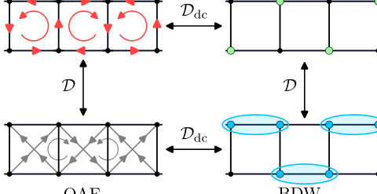
<figcaption class="paper-figure-caption"><b>Fig 2.</b> FIG. 2. (color online) The four competing orders related by duality symmetries; Ddc: density-current duality symmetry which is exact on the lattice; D: emergent duality symmetry in the low-energy limit.</figcaption>
</figure>
<figure class="paper-figure-card">
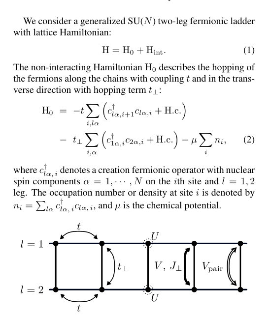
<figcaption class="paper-figure-caption"><b>Fig 3.</b> FIG. 3. (color online) Generalized two-leg SU(N) ladder with longi- tudinal t and transverse t⊥hoppings, an on-site Hubbard U term, an interchain density-density interaction V , an SU(N) Hund coupling J⊥, and a pair-hopping term Vpair.</figcaption>
</figure>
<figure class="paper-figure-card">
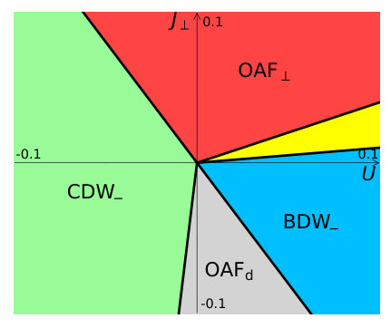
<figcaption class="paper-figure-caption"><b>Fig 4.</b> FIG. 5. (color online) RG phase diagram for V = Vpair = 0 (t = 1) and N &gt; 2 (N = 4 here).</figcaption>
</figure>
<figure class="paper-figure-card">
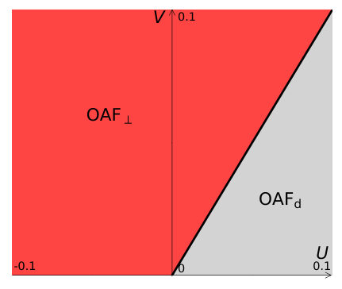
<figcaption class="paper-figure-caption"><b>Fig 5.</b> FIG. 6. (color online) RG phase diagram for model HDdc dw (25) with N &gt; 2 (t = 1 and N = 4 here).</figcaption>
</figure>
</div>

<p><strong>Summary.</strong> This work theoretically analyzes the complex phase diagram of SU(N) two-leg fermionic ladders, focusing on the competition between conventional density-wave states and unconventional loop-current ordered phases. By utilizing advanced techniques like bosonization and duality symmetries, the authors demonstrate that these competing orders are mathematically linked, providing a unified framework for understanding electronic correlations in low-dimensional quantum materials.</p>
<p><strong>Why it may be interesting.</strong> The deep connection established between exotic, time-reversal symmetry breaking loop currents and standard charge/bond density waves via exact duality symmetries provides powerful theoretical tools for understanding competing orders in strongly correlated materials.</p>
<details>
<summary>Detailed structure</summary>
<p><strong>Main problem.</strong> The study investigates loop-current ordered phases in half-filled SU(N) two-leg fermionic ladders and elucidates the relationship between these unconventional orders and conventional density-wave states via duality symmetries.</p>
<p><strong>Main result.</strong> The model predicts four competing orders, showing that for N&gt;2, loop-current phases are stabilized by Hund's interaction; furthermore, an exact density-current duality symmetry relates current-carrying phases to density-wave phases.</p>
<p><strong>Method.</strong> The analysis employs low-energy effective theories, renormalization group (RG) techniques, and bosonization methods applied to the continuum limit of the lattice Hamiltonian.</p>
<p><strong>Model / system.</strong> The system is an SU(N) two-leg fermionic ladder described by a generalized Hubbard-type Hamiltonian incorporating hopping, on-site repulsion (U), interchain interactions (V, J_perp), and pair-hopping terms. The continuum limit yields massless Dirac fermions.</p>
<p><strong>Key observables.</strong> Loop-current order parameters ($   ext{OAF}_\perp$, $  ext{OAF}_d$), conventional density-wave order parameters ($   ext{OCDW}^-$, $ ext{OBDW}$), and various current operators defining the symmetry algebra.</p>
<p><strong>Important parameters / regimes.</strong> Half-filling, SU(N) structure, Hund's coupling ($J_\perp$), doping level, and interaction strengths (U, V).</p>
<p><strong>Assumptions / limitations.</strong> The analysis relies on low-energy approximations, continuum limits, and the existence of specific duality symmetries ($D_{dc}$ and $D$).</p>
<p><strong>Figures summary.</strong> Figures illustrate the two loop-current ordered phases breaking T-symmetry, the relationship between the four competing orders via duality symmetries, and the structure of the generalized SU(N) ladder Hamiltonian.</p>
<p><strong>Paper structure.</strong> The paper moves from defining the full lattice Hamiltonian to deriving low-energy continuum descriptions using bosonization. It then systematically analyzes the symmetry constraints imposed by density-current dualities ($D_{dc}$), leading to a classification of the current algebra ($\mathfrak{so}(4N)$) and identifying which phases are stable under RG flow.</p>
</details>
<details>
<summary>Abstract</summary>
<p>We investigate the formation of loop-current ordered phases in half-filled SU($N$) two-leg fermionic ladders. Using a low-energy approach, we uncover the existence of non-perturbative duality symmetries relating four competing orders. Two of these orders correspond to loop-current ordered phases that spontaneously break the time-reversal symmetry and describe charge currents circulating in a staggered pattern either around the plaquettes or along the diagonals of the ladder. These unconventional phases are shown to be dual to conventional (charge and bond) density-wave phases through an exact density-current duality symmetry existing on the lattice. From a perturbative renormalization group approach, we find that these phases for $N>2$ are stabilized in a half-filled SU($N$) two-leg Hubbard ladder with an additional SU($N$) Hund's interaction. The effect of a small doping on these phases is also discussed.</p>
</details>
<p><sub><a href="#top">↑ back to top</a></sub></p>

<p><a id="paper-2607.09599"></a></p>
<h3 id="generalized-nonlinear-imaginary-time-evolution"><a href="http://arxiv.org/abs/2607.09599v1">Generalized Nonlinear Imaginary-Time Evolution</a></h3>
<p><strong>Authors:</strong> Chenyu Shi, Hao Wang, Jin-Fu Chen<br>
<strong>Type:</strong> theory · <strong>Category:</strong> quantum information and computing · <strong>PDF:</strong> <a href="https://arxiv.org/pdf/2607.09599v1">https://arxiv.org/pdf/2607.09599v1</a><br>
<strong>Analysis basis:</strong> full PDF text, analyzed in chunks
<strong>Topic relevance:</strong> <code>correlated / nonlocal dissipation</code> <strong>1/5</strong> · <code>correlated cavity matter</code> <strong>1/5</strong> · <code>driven-dissipative phase transition</code> <strong>1/5</strong> · <code>entanglement &amp; information structure</code> <strong>1/5</strong> · <code>non-equilibrium dynamics</code> <strong>1/5</strong></p>
<div class="figure-strip-hint">↔ Scroll figures horizontally</div>
<div class="paper-figures-scroll">
<figure class="paper-figure-card">
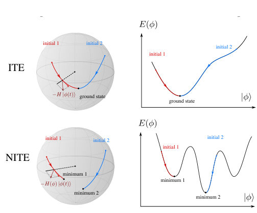
<figcaption class="paper-figure-caption"><b>Fig 1.</b> FIG. 1. Illustrative diagram comparing ITE and NITE. Stan- dard ITE induces an energy-descent flow on the accessible state manifold, driving any initial state with nonzero ground- state overlap toward the ground-state subspace. The up- date direction is given by the tangent-space projection of −H |ϕ(t)⟩. NITE generalizes this picture to state-dependent effective generators associated with general cost functions. Its cost landscape may contain multiple local minima, and the re- sulting flow can converge to different solutions depending on the initialization. The NITE update direction is also given by the tangent-space projection of −H(ϕ(t)) |ϕ(t)⟩.</figcaption>
</figure>
<figure class="paper-figure-card">
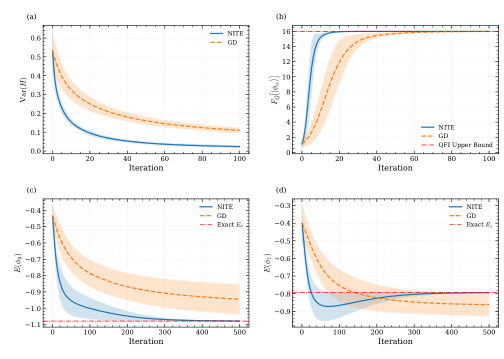
<figcaption class="paper-figure-caption"><b>Fig 2.</b> FIG. 2. Comparison of NITE and standard gradient descent learning curves in three subroutine tasks. (a) Variance min- imization. (b) QFI maximization, with the red dash-dotted line indicating the theoretical QFI upper bound. (c,d) Simul- taneous preparation of the ground state and first excited state, where the two panels show the energies of the prepared states and the red dash-dotted lines indicate the corresponding ex- act eigen energies. Solid blue curves denote NITE, dashed orange curves denote GD, and shaded regions show one stan- dard deviation over 10 independent runs.</figcaption>
</figure>
</div>

<p><strong>Summary.</strong> The paper introduces Nonlinear Imaginary-Time Evolution (NITE) as a generalization of ITE to optimize any quantum cost function, not just energy. It rigorously proves that NITE converges exponentially fast by utilizing the geometry of the state space manifold. This makes it a versatile and theoretically robust optimization method for modern variational quantum algorithms.</p>
<p><strong>Why it may be interesting.</strong> This provides a powerful, geometrically grounded optimization tool that generalizes standard techniques like imaginary-time evolution for state preparation in NISQ algorithms.</p>
<details>
<summary>Detailed structure</summary>
<p><strong>Main problem.</strong> The work generalizes standard Imaginary-Time Evolution (ITE) from solely finding ground states to optimizing arbitrary quantum state preparation tasks.</p>
<p><strong>Main result.</strong> A Nonlinear Imaginary-Time Evolution (NITE) framework is proposed, which achieves local exponential convergence rates for various variational optimization problems beyond simple energy minimization.</p>
<p><strong>Method.</strong> NITE defines the evolution as a gradient flow using the Fubini–Study metric applied to a general cost function $E(\phi)$, leading to state-dependent effective generators.</p>
<p><strong>Model / system.</strong> The system involves pure quantum states $|\phi
angle$ parameterized by variational circuits, allowing for optimization of multi-state systems and complex objectives like variance minimization or QFI maximization.</p>
<p><strong>Key observables.</strong> Energy expectation value $\langle H 
angle$, general cost function $E(\phi)$, Quantum Fisher Information (QFI), and the convergence rate ($\mu$).</p>
<p><strong>Important parameters / regimes.</strong> The local minimum must be non-degenerate, and the analysis relies on establishing strong geodesic convexity near the target state.</p>
<p><strong>Assumptions / limitations.</strong> Convergence proofs assume the cost function is sufficiently smooth ($C^2$) and that a small neighborhood around the optimum exhibits strong geodesic convexity (Polyak–Łojasiewicz inequality).</p>
<p><strong>Figures summary.</strong> Figures compare NITE learning curves against standard Gradient Descent (GD) across tasks like variance minimization and QFI maximization, consistently showing NITE's superior linear convergence rate.</p>
<p><strong>Paper structure.</strong> The paper first introduces the generalization from ITE to NITE for arbitrary cost functions. It then details the mathematical formulation using Fubini-Study geometry, proves the local exponential convergence rate, and applies this framework to several practical variational tasks (e.g., VQE, quantum sensing).</p>
</details>
<details>
<summary>Abstract</summary>
<p>Imaginary-time evolution (ITE) is a powerful method for ground-state preparation of a given Hamiltonian. The normalized ITE can be viewed as a gradient flow of the energy expectation value with respect to the Fubini--Study metric. In this work, we propose a generalized nonlinear imaginary-time evolution (NITE) for more general quantum state-preparation tasks. We further present a hardware-efficient variational implementation of NITE and reveal its connection to quantum natural gradient descent. NITE is applied to several subroutine tasks, including variance minimization in variational eigensolvers, probe-state preparation in variational quantum sensing, and excited-state preparation using penalty terms. We prove that NITE achieves a local exponential convergence rate under reasonable assumptions. Our results show that NITE outperforms standard gradient descent and can serve as an efficient optimization method for variational tasks beyond ground-state preparation.</p>
</details>
<p><sub><a href="#top">↑ back to top</a></sub></p>

<p><a id="paper-2607.09378"></a></p>
<h3 id="when-routes-run-out-adversarial-co-learning-and-explainable-robustness-in-quantum-repeater-networks"><a href="http://arxiv.org/abs/2607.09378v1">When Routes Run Out: Adversarial Co-Learning and Explainable Robustness in Quantum Repeater Networks</a></h3>
<p><strong>Authors:</strong> Brennan Bell, Inti Gabriel Mendoza Estrada, Andreas Trügler, Paul Erker<br>
<strong>Type:</strong> theory · <strong>Category:</strong> quantum information and computing · <strong>PDF:</strong> <a href="https://arxiv.org/pdf/2607.09378v1">https://arxiv.org/pdf/2607.09378v1</a><br>
<strong>Analysis basis:</strong> full PDF text, analyzed in chunks
<strong>Topic relevance:</strong> <code>correlated / nonlocal dissipation</code> <strong>1/5</strong> · <code>driven-dissipative phase transition</code> <strong>1/5</strong> · <code>entanglement &amp; information structure</code> <strong>1/5</strong> · <code>methods for driven-dissipative</code> <strong>1/5</strong> · <code>non-equilibrium dynamics</code> <strong>1/5</strong></p>
<div class="figure-strip-hint">↔ Scroll figures horizontally</div>
<div class="paper-figures-scroll">
<figure class="paper-figure-card">
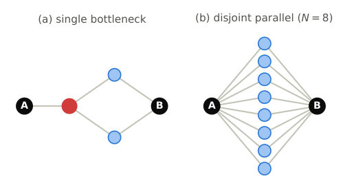
<figcaption class="paper-figure-caption"><b>Fig 1.</b> Fig. 1. Exemplar topologies. (a) In a single-bottleneck graph every route crosses one node (red): Eve can deny all traffic from one surface. (b) In a disjoint-parallel graph one attack surface covers only one of N routes.</figcaption>
</figure>
<figure class="paper-figure-card">
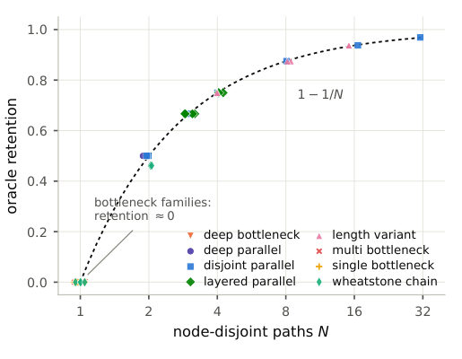
<figcaption class="paper-figure-caption"><b>Fig 2.</b> Fig. 2. Oracle retention versus node-disjoint path count N for all 50 topologies (log2 axis; coincident points jittered). Non-bottleneck families track 1 −1/N; bottleneck families sit at zero.</figcaption>
</figure>
<figure class="paper-figure-card">
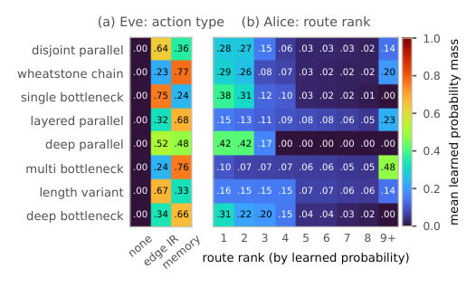
<figcaption class="paper-figure-caption"><b>Fig 3.</b> Fig. 3. Learned (time-averaged) Exp3 strategies aggregated by family. (a) Eve’s probability mass by action type. (b) Alice’s mass by route rank (routes sorted by learned probability per graph; “9+” sums the tail). Cell labels give the mean mass.</figcaption>
</figure>
<figure class="paper-figure-card">
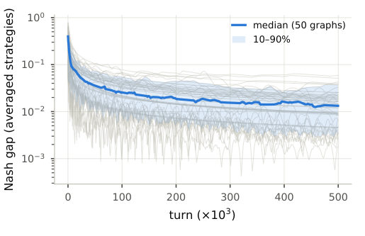
<figcaption class="paper-figure-caption"><b>Fig 4.</b> Fig. 4. Nash-gap decay across all 50 topologies (gray: individual graphs; blue: median and 10–90% band). The median halves between 105 and 5×105 turns.</figcaption>
</figure>
<figure class="paper-figure-card">
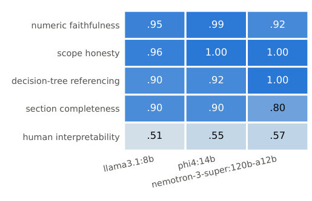
<figcaption class="paper-figure-caption"><b>Fig 5.</b> Fig. 5. Mean scores for local LLMs (columns). Rubric (rows) evaluation over 50 scored prompt responses per LLM. Rubric criteria: numeric faithfulness (do stated numbers appear verbatim in the prompt), scope honesty (no security or physical-validity over-claims), decision tree referencing (does it refer to the correct tree leaf for its graph), and section completeness (how many of the requested sections are in the response), are automatically verified. The subjective, human interpretability score was evaluated by the authors and cross-referenced against Claude Fable 5 [21] in an independent blind pass.</figcaption>
</figure>
</div>

<p><strong>Summary.</strong> This paper models quantum repeater network routing as an adversarial game where an attacker (Eve) tries to degrade entanglement links while a sender (Alice) chooses routes. By using advanced co-learning algorithms and analyzing the resulting strategies, the authors demonstrate that network bottlenecks are critical vulnerabilities, providing both quantitative robustness measures and explainable insights into these weaknesses.</p>
<p><strong>Why it may be interesting.</strong> It provides a rigorous framework for testing the resilience of quantum communication protocols against sophisticated, adaptive adversaries, which is crucial for designing practical quantum internet infrastructure.</p>
<details>
<summary>Detailed structure</summary>
<p><strong>Main problem.</strong> The study investigates adversarial robustness in quantum-network routing when resources (routes) are limited, framed as an adversarial bandit problem.</p>
<p><strong>Main result.</strong> Adversarial co-learning successfully recovers the minimax strategy structure, showing that network bottlenecks lead to zero retention while non-bottleneck paths follow a predictable $1 - 1/N$ coverage principle.</p>
<p><strong>Method.</strong> The authors employ adversarial co-learning (Exp3) against simulated quantum communication transcripts and use decision-tree regressors followed by LLMs for explainability analysis.</p>
<p><strong>Model / system.</strong> The model is an entanglement-based quantum repeater network utilizing the Ekert-91 (E91) protocol. The game involves Alice selecting a route and Eve choosing an attack surface (edge intercept–resend or memory degradation).</p>
<p><strong>Key observables.</strong> CHSH violation ($|S|$), learned retention rate, Nash equilibrium gap decay, and decision-tree faithfulness ($R^2$).</p>
<p><strong>Important parameters / regimes.</strong> 50 structured topologies across eight structural families; the CHSH bound ($    ext{S} &gt; 2$); finite sample size for learning.</p>
<p><strong>Assumptions / limitations.</strong> The analysis assumes that learned strategies can approximate the full-matrix minimax reference, and that LLMs can be prompted to summarize complex decision evidence.</p>
<p><strong>Figures summary.</strong> Figures illustrate exemplary topologies (bottleneck vs. disjoint), compare theoretical oracle retention ($1 - 1/N$) against observed learning results, and show probability mass distributions of learned strategies for Alice and Eve.</p>
<p><strong>Paper structure.</strong> The paper first sets up the adversarial bandit game on quantum repeaters using E91 transcripts. It then applies adversarial co-learning to measure robustness across various topologies. Finally, it develops an open-source explanation workflow by fitting decision trees to map topology features to strategic outcomes and summarizing these findings with LLMs.</p>
</details>
<details>
<summary>Abstract</summary>
<p>We study an adversarial bandit problem for entanglement-based quantum-network routing over a modest graph corpus. Alice selects an end-to-end repeater route for an Ekert-91 protocol (E91) representing her move, while Eve selects an attack surface, either edge intercept--resend or repeater memory degradation. Payoffs are drawn from cached SeQUeNCe-simulated E91 transcripts, and Alice accepts a turn when the finite-sample statistic violates the Clauser-Horne-Shimony-Holt (CHSH) bound. Performing adversarial co-learning across 50 structured topologies, we find that learned retention tracks a full-matrix minimax reference closely (Pearson $r=0.99$): under a one-surface Eve action model, bottleneck families have zero retention, while non-bottleneck families follow a $1-1/N$ coverage principle. We then fit decision-tree explanation models to graph-, attack-, and route-level topology-corpus targets and report their faithfulness. Finally, we construct prompt records for local language models to summarize the tree evidence, resulting in an open-source explanation workflow for quantum-repeater network games.</p>
</details>
<p><sub><a href="#top">↑ back to top</a></sub></p>

<p><a id="paper-2607.08841"></a></p>
<h3 id="partially-commutative-polynomial-optimization"><a href="http://arxiv.org/abs/2607.08841v1">Partially-Commutative Polynomial Optimization</a></h3>
<p><strong>Authors:</strong> Abhishek Mishra, Moisés Bermejo Morán, Stefano Pironio<br>
<strong>Type:</strong> theory · <strong>Category:</strong> quantum information and computing · <strong>PDF:</strong> <a href="https://arxiv.org/pdf/2607.08841v1">https://arxiv.org/pdf/2607.08841v1</a><br>
<strong>Analysis basis:</strong> full PDF text, analyzed in chunks
<strong>Topic relevance:</strong> <code>Keldysh / 2PI / non-Gaussian methods</code> <strong>1/5</strong> · <code>analog quantum simulation</code> <strong>1/5</strong> · <code>driven-dissipative phase transition</code> <strong>1/5</strong> · <code>entanglement &amp; information structure</code> <strong>1/5</strong></p>
<div class="figure-strip-hint">↔ Scroll figures horizontally</div>
<div class="paper-figures-scroll">
<figure class="paper-figure-card">
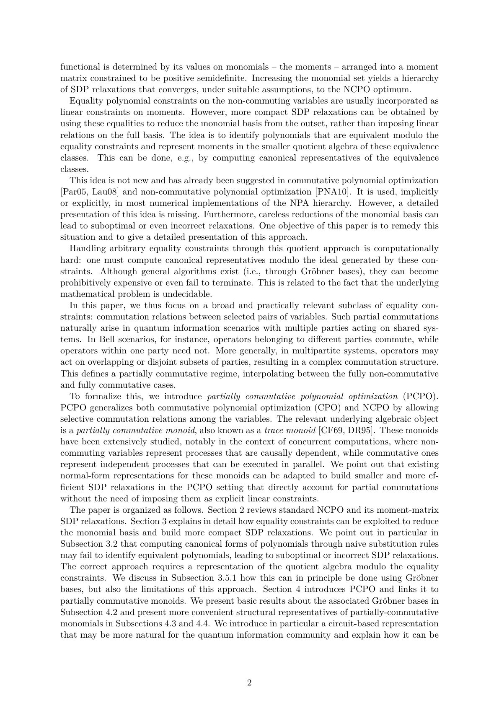
<figcaption class="paper-figure-caption"><b>Fig 1.</b> Low-resolution page preview, page 2</figcaption>
</figure>
<figure class="paper-figure-card">
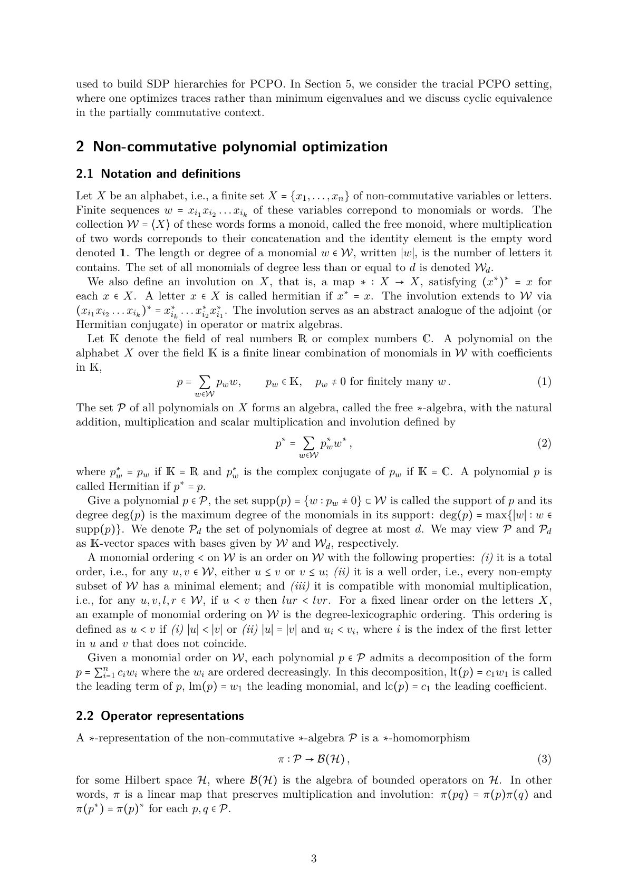
<figcaption class="paper-figure-caption"><b>Fig 2.</b> Low-resolution page preview, page 3</figcaption>
</figure>
<figure class="paper-figure-card">
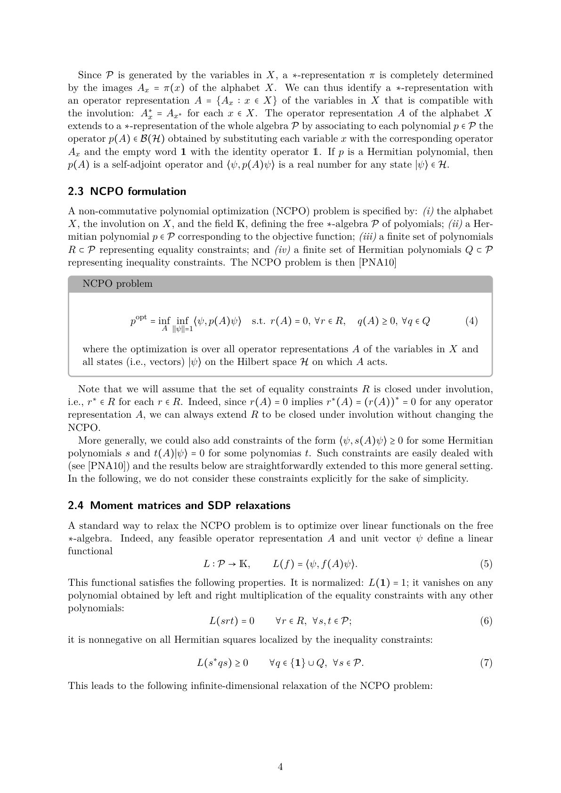
<figcaption class="paper-figure-caption"><b>Fig 3.</b> Low-resolution page preview, page 4</figcaption>
</figure>
<figure class="paper-figure-card">
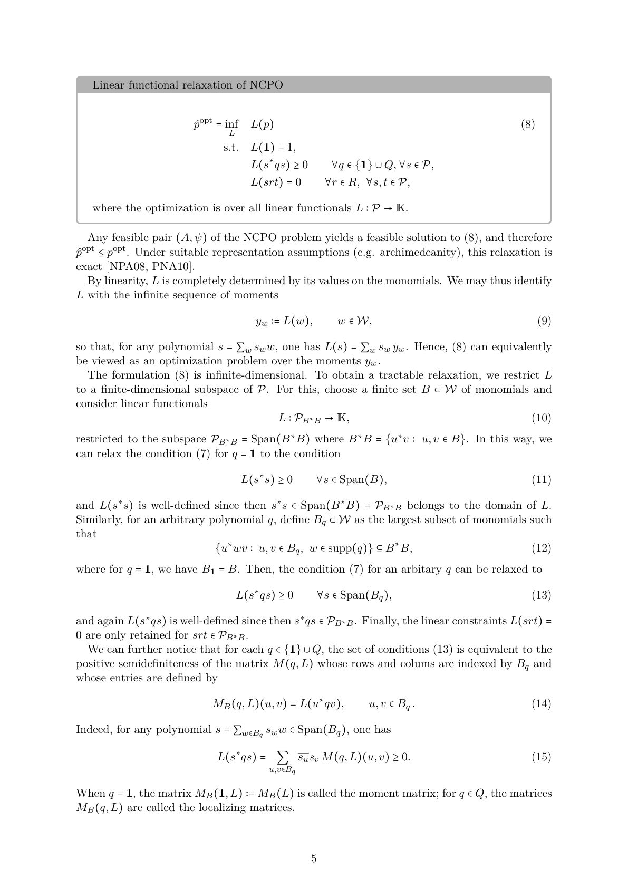
<figcaption class="paper-figure-caption"><b>Fig 4.</b> Low-resolution page preview, page 5</figcaption>
</figure>
<figure class="paper-figure-card">
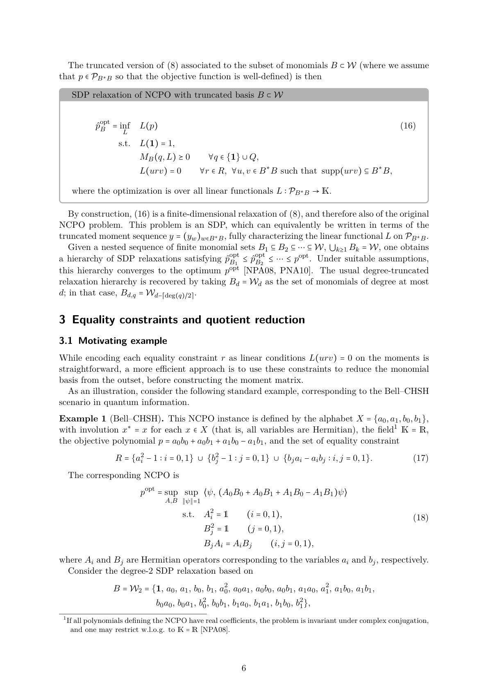
<figcaption class="paper-figure-caption"><b>Fig 5.</b> Low-resolution page preview, page 6</figcaption>
</figure>
</div>

<p><strong>Summary.</strong> This paper develops Partially-Commutative Polynomial Optimization (PCPO), a generalization for optimizing polynomials whose variables only partially commute. It achieves this by constructing compact Semidefinite Programming relaxations that natively encode these partial commutation relations into the monomial structure, offering a significant computational improvement over methods relying solely on linear constraints.</p>
<p><strong>Why it may be interesting.</strong> For theorists working on open quantum systems or quantum information, this provides a powerful mathematical tool to analyze complex physical models (like multi-party entanglement measures) where operators do not commute fully but obey specific partial commutation rules.</p>
<details>
<summary>Detailed structure</summary>
<p><strong>Main problem.</strong> The paper addresses Partially-Commutative Polynomial Optimization (PCPO), a generalization of standard commutative and non-commutative optimization problems.</p>
<p><strong>Main result.</strong> It introduces PCPO, which models systems where variables exhibit partial commutation relations, and shows that these can be incorporated into compact Semidefinite Programming (SDP) relaxations by exploiting the underlying partially-commutative monoid structure.</p>
<p><strong>Method.</strong> The core method involves using SDP hierarchies derived from moment matrix theory, but crucially modifies the basis construction to natively implement partial commutation relations algebraically rather than through simple linear constraints.</p>
<p><strong>Model / system.</strong> The framework is motivated by quantum information scenarios involving multiple parties acting on shared systems, where operators exhibit selective commutation (partial commutations). This interpolates between fully commutative and fully non-commutative regimes.</p>
<p><strong>Key observables.</strong> Optimization of polynomials over partially-commuting variables; the objective value $\langle\psi, p(A)\psi
angle$ in the tracial setting.</p>
<p><strong>Important parameters / regimes.</strong> The degree $d$ of the SDP relaxation hierarchy; the specific set of partial commutation relations defining the monoid structure.</p>
<p><strong>Assumptions / limitations.</strong> The approach assumes that the algebraic properties derived from the partially-commutative monoid can be used to construct a reduced monomial basis for the SDP, avoiding the computational difficulties associated with general quotient algebra representations.</p>
<p><strong>Paper structure.</strong> The paper reviews standard Non-Commutative Polynomial Optimization (NCPO) using NPA hierarchies before introducing PCPO. It focuses on adapting techniques from partially-commutative monoids to build efficient, constraint-free SDP relaxations for the general case.</p>
</details>
<details>
<summary>Abstract</summary>
<p>Semidefinite programming hierarchies for commutative and non-commutative polynomial optimization represent a powerful computational tool with many applications in quantum information. In such applications, a given variable is typically not either commuting or non-commuting with all other variables, but instead commutes with some variables and does not commute with others, i.e., the variables satisfy some partial commutation relations. While such partial commutation relations can always be incorporated in a fully non-commutative setting through suitable linear constraints in the semidefinite programming relaxations, exploiting their algebraic properties from the onset can result in more compact relaxations. This leads us to introduce partially-commutative polynomial optimization, a framework that encompasses commutative and non-commutative polynomial optimization, allowing for arbitrary commutation relations among the variables. We point out that the underlying algebraic structure is that of a partially-commutative monoid. We present and review several key aspects of such monoids and show how they can be used to build SDP relaxations for partially-commutative polynomial optimization problems in which the partial commutations are natively implemented in the monomial structure, without the need of additional linear constraints.</p>
</details>
<p><sub><a href="#top">↑ back to top</a></sub></p>

<p><a id="paper-2607.09381"></a></p>
<h3 id="cosma-communication-aware-optimization-of-fermionic-simulation-kernels-for-modular-quantum-architectures"><a href="http://arxiv.org/abs/2607.09381v1">COSMA: Communication-aware Optimization of Fermionic Simulation Kernels for Modular Quantum Architectures</a></h3>
<p><strong>Authors:</strong> Enrico Russo, Francesco G. Blanco, Elio Vinciguerra, Davide Patti, Giuseppe Ascia, Maurizio Palesi<br>
<strong>Type:</strong> theory · <strong>Category:</strong> quantum information and computing · <strong>PDF:</strong> <a href="https://arxiv.org/pdf/2607.09381v1">https://arxiv.org/pdf/2607.09381v1</a><br>
<strong>Analysis basis:</strong> full PDF text, analyzed in chunks
<strong>Topic relevance:</strong> <code>analog quantum simulation</code> <strong>1/5</strong> · <code>methods for driven-dissipative</code> <strong>1/5</strong></p>
<div class="figure-strip-hint">↔ Scroll figures horizontally</div>
<div class="paper-figures-scroll">
<figure class="paper-figure-card">
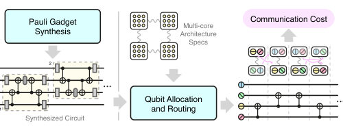
<figcaption class="paper-figure-caption"><b>Fig 1.</b> Fig. 1: Overview of the compilation flow for quantum simulation kernels on modular architectures.</figcaption>
</figure>
<figure class="paper-figure-card">
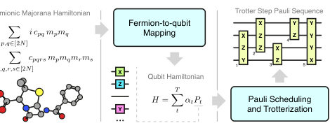
<figcaption class="paper-figure-caption"><b>Fig 2.</b> Fig. 1 summarises the steps required to evaluate the com- munication cost of quantum simulation starting from a target molecule and a modular quantum architecture. This section reviews the main concepts used throughout the paper for each of the steps of Fig. 1.</figcaption>
</figure>
<figure class="paper-figure-card">
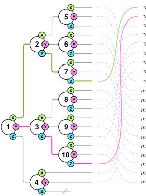
<figcaption class="paper-figure-caption"><b>Fig 3.</b> Fig. 2: JKMN-like [17] ternary-tree mapping example for 10 modes with identity mode-order bijection f(u) = u.</figcaption>
</figure>
<figure class="paper-figure-card">
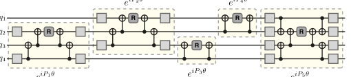
<figcaption class="paper-figure-caption"><b>Fig 4.</b> Fig. 5: Synthesized circuit for one Trotter step after decom- posing each Pauli gadget as in Fig. 4.</figcaption>
</figure>
<figure class="paper-figure-card">

<figcaption class="paper-figure-caption"><b>Fig 5.</b> Fig. 3: Three possible orderings of Pauli strings, showing their supports for a simple one-dimensional qubit ordering.</figcaption>
</figure>
</div>

<p><strong>Summary.</strong> This paper introduces COSMA, a novel compilation framework designed to efficiently run fermionic simulations on multi-core quantum hardware. It tackles the critical bottleneck of inter-core communication by jointly optimizing the mapping from fermions to qubits, the scheduling of Pauli operations, and the physical qubit layout. The results show significant reductions in communication overhead compared to existing methods.</p>
<p><strong>Why it may be interesting.</strong> It directly addresses the practical limitations of scaling quantum algorithms by providing a systematic compiler approach to manage physical connectivity constraints inherent in modular quantum processors.</p>
<details>
<summary>Detailed structure</summary>
<p><strong>Main problem.</strong> Scaling quantum simulation for chemically relevant problems requires modular architectures, but inter-core quantum communication becomes a major performance bottleneck.</p>
<p><strong>Main result.</strong> COSMA achieves up to 2.5x reduction in communication cost compared to state-of-the-art baselines, demonstrating that cross-layer co-design is essential for scalable simulation on multi-core hardware.</p>
<p><strong>Method.</strong> The framework jointly optimizes fermion-to-qubit mapping, Pauli scheduling, and qubit allocation to minimize inter-core state transfers across modular quantum units.</p>
<p><strong>Model / system.</strong> The system involves simulating fermionic dynamics governed by a Hamiltonian decomposed into Pauli strings, which are then mapped onto qubits for execution on interconnected Quantum Processing Units (QPUs).</p>
<p><strong>Key observables.</strong> Inter-core communication cost (the primary metric minimized), circuit depth, and simulation accuracy.</p>
<p><strong>Important parameters / regimes.</strong> The number of fermionic modes, the size/connectivity of the modular architecture, and the Trotterization step size.</p>
<p><strong>Assumptions / limitations.</strong> The approach assumes a modular quantum hardware structure where inter-core communication cost is the dominant performance limiter; it also uses approximations like the first-order Trotter formula.</p>
<p><strong>Figures summary.</strong> Figures illustrate the compilation flow (Mapping -&gt; Scheduling -&gt; Synthesis -&gt; Allocation) and provide examples of specific mappings (e.g., JKMN-like ternary trees) and circuit syntheses for a single Trotter step.</p>
<p><strong>Paper structure.</strong> The paper details the problem formulation, introduces COSMA as a cross-layer co-design framework, describes the joint optimization process involving mapping choices, Pauli scheduling, and hardware layout, and validates results on molecular benchmarks.</p>
</details>
<details>
<summary>Abstract</summary>
<p>Quantum simulation is a leading application of quantum computing, but scaling to chemically relevant problems requires modular architectures composed of interconnected quantum processing units. In such systems, inter-core quantum communication becomes a major performance bottleneck. In this work, we present COSMA, a communication-aware compilation framework for fermionic simulation kernels targeting modular quantum architectures. Our approach jointly optimizes fermion-to-qubit mapping, Pauli scheduling, and qubit allocation to minimize inter-core state transfers. Evaluated on molecular benchmarks, COSMA achieves up to $2.5\times$ reduction in communication cost compared to state-of-the-art baselines, with a median improvement of $1.7\times$. These results demonstrate that cross-layer co-design is essential for efficient and scalable quantum simulation on multi-core quantum hardware.</p>
</details>
<p><sub><a href="#top">↑ back to top</a></sub></p>

<p><a id="paper-2607.09445"></a></p>
<h3 id="diagnosing-quantum-reservoirs-at-scale-based-on-expressivity-and-coverage"><a href="http://arxiv.org/abs/2607.09445v1">Diagnosing quantum reservoirs at scale based on expressivity and coverage</a></h3>
<p><strong>Authors:</strong> Laia Domingo, Oriol Balló-Gimbernat, Fernando Vilariño<br>
<strong>Type:</strong> both · <strong>Category:</strong> quantum information and computing · <strong>PDF:</strong> <a href="https://arxiv.org/pdf/2607.09445v1">https://arxiv.org/pdf/2607.09445v1</a><br>
<strong>Analysis basis:</strong> full PDF text, analyzed in chunks
<strong>Topic relevance:</strong> <code>entanglement &amp; information structure</code> <strong>1/5</strong> · <code>methods for driven-dissipative</code> <strong>1/5</strong></p>
<div class="figure-strip-hint">↔ Scroll figures horizontally</div>
<div class="paper-figures-scroll">
<figure class="paper-figure-card">

<figcaption class="paper-figure-caption"><b>Fig 1.</b> Figure 1. Comparison of expressivity and dynamical-complexity diagnostics for the G3 reservoir family at n = 6. The KL divergence from the Haar fidelity distribution is shown in orange on the left logarithmic axis. The order-statistics scores GORS for K ∈{1, 4, 8} are shown on separate right axes, together with their Haar references. The dashed blue curve shows the chaos indicator based on the ratio of consecutive level spacings r, and the dashed purple curve shows the Krylov complexity. All diagnostics identify the same transition from shallow structured circuits to Haar-like, chaotic behavior as the circuit depth increases.</figcaption>
</figure>
<figure class="paper-figure-card">

<figcaption class="paper-figure-caption"><b>Fig 2.</b> Figure 2. Quantum extreme learning machine results on the synthetic Fourier regression task for n = 6. Top: ORS diagnostic, using the multi-basis diagnostic with B = 50 random local Pauli bases for the diagonal families. Middle: effective rank Reff. Bottom: test Mean Squared Error (MSE).</figcaption>
</figure>
<figure class="paper-figure-card">

<figcaption class="paper-figure-caption"><b>Fig 3.</b> Figure 3. Same as Fig. 2 for the quantum reservoir computing task on the synthetic NARMA dataset for n = 6.</figcaption>
</figure>
<figure class="paper-figure-card">

<figcaption class="paper-figure-caption"><b>Fig 4.</b> Figure 4. QELM results on the LiH excited-energy prediction task. The expressivity–coverage alignment observed in the synthetic Fourier task persists in the quantum-chemistry setting. Reservoirs that approach the Haar reference and develop larger effective rank achieve the lowest test MSE.</figcaption>
</figure>
<figure class="paper-figure-card">

<figcaption class="paper-figure-caption"><b>Fig 5.</b> Figure 5. QRC results on the EMSIG residential energy forecasting task. The test metric is R2, so higher values indicate better forecasting performance. The best-performing reservoirs are those for which strong expressivity diagnostics are accompanied by large effective rank.</figcaption>
</figure>
</div>

<p><strong>Summary.</strong> The paper presents a scalable, two-part diagnostic framework—ORS and $ ext{Reff}$—to characterize quantum reservoirs used in QML. It overcomes the exponential scaling problem of older diagnostics by focusing only on top output probabilities and input feature rank. The results confirm that high expressivity (near Haar randomness) combined with sufficient feature coverage leads to superior machine learning performance.</p>
<p><strong>Why it may be interesting.</strong> This work provides a crucial set of metrics for assessing the hardware readiness and theoretical limits of variational quantum algorithms by decoupling intrinsic expressivity from task-specific feature utilization.</p>
<details>
<summary>Detailed structure</summary>
<p><strong>Main problem.</strong> Existing methods for diagnosing quantum reservoir expressivity scale exponentially with system size, making them impractical for large-scale hardware.</p>
<p><strong>Main result.</strong> The authors introduce a scalable framework using two complementary diagnostics—an Order-Statistics (ORS) score and an Effective Rank ($    ext{Reff}$)—that successfully correlates intrinsic expressivity with usable predictive information on quantum machine learning tasks.</p>
<p><strong>Method.</strong> They propose the ORS score, which analyzes only the top output probabilities against a Haar baseline, and $ ext{Reff}$, which measures input-dependent feature utility. These are combined to provide hardware-agnostic diagnostics.</p>
<p><strong>Model / system.</strong> The study focuses on Quantum Reservoirs (QRs) used in Quantum Reservoir Computing (QRC) and Quantum Extreme Learning Machines (QELMs). The reservoirs are constructed using various fixed random quantum circuits (e.g., G1, G2, G3 families) tested across synthetic tasks and real-world benchmarks like LiH chemistry regression.</p>
<p><strong>Key observables.</strong> Order-Statistics (ORS) gap ($\Lambda - \Lambda_{	ext{Haar}}$), Effective Rank ($    ext{Reff}$), Test Mean Squared Error (MSE), and $R^2$ correlation coefficients.</p>
<p><strong>Important parameters / regimes.</strong> System size/Hilbert-space dimension ($D$), effective fidelity ($f_{Bq}$), number of gates, and the choice between commuting vs. non-commuting circuit constructions.</p>
<p><strong>Assumptions / limitations.</strong> The noise correction assumes a dominant global depolarizing channel; the analytical derivations for ORS rely on the large-$D$ approximation.</p>
<p><strong>Figures summary.</strong> Figures demonstrate that reservoir families approaching Haar randomness (like G3) show high ORS scores and $   ext{Reff}$, correlating with low test MSE. The comparison between different circuit types shows how non-commuting structures maintain better performance.</p>
<p><strong>Paper structure.</strong> The paper first introduces the scalability problem, then details the two diagnostics (ORS and $    ext{Reff}$), validates them against established theory and noise models, and finally applies the combined framework to benchmark real-world quantum machine learning tasks.</p>
</details>
<details>
<summary>Abstract</summary>
<p>Quantum reservoirs offer a hardware-friendly route to quantum machine learning, replacing trainable circuits with fixed random dynamics and a classical readout. Because the reservoir is not optimized, performance depends entirely on the choice of reservoir family, yet existing diagnostics demand resources that grow exponentially with system size. We introduce a scalable, hardware-agnostic framework built on two complementary quantities. The first is a task-independent order-statistics (ORS) expressivity score, which compares only the largest output probabilities of a reservoir ensemble against an analytical Haar baseline. It never reconstructs the full output distribution, is cost-independent of Hilbert-space dimension, and admits a closed-form depolarizing noise correction, making it directly usable on hardware. The second is the task-dependent effective rank $R_{\mathrm{eff}}$ of the feature matrix, which measures how much input-dependent information reaches the readout. We validate the ORS score against established complexity diagnostics and confirm it remains informative under simulated noise and on IBM quantum hardware. Across synthetic and real quantum extreme learning machine and quantum reservoir computing benchmarks, ORS captures the intrinsic expressivity hierarchy of reservoir families while $R_{\mathrm{eff}}$ determines when that expressivity becomes usable predictive information.</p>
</details>
<p><sub><a href="#top">↑ back to top</a></sub></p>

<p><a id="paper-2607.09113"></a></p>
<h3 id="quantum-enhanced-synthetic-data-generation-using-quantum-circuit-born-machines-for-imbalanced-tabular-learning"><a href="http://arxiv.org/abs/2607.09113v1">Quantum-Enhanced Synthetic Data Generation Using Quantum Circuit Born Machines for Imbalanced Tabular Learning</a></h3>
<p><strong>Authors:</strong> Tanapol Nuatho, Narisorn Sangnakara, Prapong Prechaprapranwong, Rajchawit Sarochawikasit<br>
<strong>Type:</strong> both · <strong>Category:</strong> quantum information and computing · <strong>PDF:</strong> <a href="https://arxiv.org/pdf/2607.09113v1">https://arxiv.org/pdf/2607.09113v1</a><br>
<strong>Analysis basis:</strong> full PDF text, analyzed in chunks
<strong>Topic relevance:</strong> <code>entanglement &amp; information structure</code> <strong>1/5</strong> · <code>methods for driven-dissipative</code> <strong>1/5</strong></p>
<div class="figure-strip-hint">↔ Scroll figures horizontally</div>
<div class="paper-figures-scroll">
<figure class="paper-figure-card">

<figcaption class="paper-figure-caption"><b>Fig 1.</b> Low-resolution page preview, page 2</figcaption>
</figure>
<figure class="paper-figure-card">

<figcaption class="paper-figure-caption"><b>Fig 2.</b> Low-resolution page preview, page 3</figcaption>
</figure>
<figure class="paper-figure-card">

<figcaption class="paper-figure-caption"><b>Fig 3.</b> Low-resolution page preview, page 4</figcaption>
</figure>
<figure class="paper-figure-card">

<figcaption class="paper-figure-caption"><b>Fig 4.</b> Low-resolution page preview, page 5</figcaption>
</figure>
<figure class="paper-figure-card">

<figcaption class="paper-figure-caption"><b>Fig 5.</b> Low-resolution page preview, page 6</figcaption>
</figure>
</div>

<p><strong>Summary.</strong> This work proposes using a Quantum Circuit Born Machine (QCBM) within a hybrid quantum-classical pipeline to generate synthetic data for imbalanced tabular datasets. By leveraging quantum properties like entanglement, the QCBM achieves superior structural similarity compared to classical oversampling methods. This augmentation significantly boosts downstream classification performance on real-world benchmarks.</p>
<p><strong>Why it may be interesting.</strong> While focused on ML, the paper's reliance on variational quantum circuits to model complex probability distributions touches upon quantum state tomography and characterizing quantum process fidelity, which are relevant areas in quantum information theory.</p>
<details>
<summary>Detailed structure</summary>
<p><strong>Main problem.</strong> The paper addresses data scarcity and class imbalance, common challenges in machine learning that degrade model generalization.</p>
<p><strong>Main result.</strong> Using a Quantum Circuit Born Machine (QCBM) for synthetic data augmentation improves classification metrics like F1-score by 5–15% on structured tabular datasets.</p>
<p><strong>Method.</strong> A hybrid quantum-classical framework is employed where the QCBM models complex probability distributions to generate synthetic samples, which are then used to augment imbalanced training data.</p>
<p><strong>Model / system.</strong> The core model is the Quantum Circuit Born Machine (QCBM), which utilizes a parameterized variational quantum circuit $U(\theta)$ exploiting superposition and entanglement. The process involves encoding classical data into quantum states for distribution modeling.</p>
<p><strong>Key observables.</strong> Kullback-Leibler (KL) divergence, Maximum Mean Discrepancy (MMD), F1-score, and minority-class recall are used to quantify distribution fidelity and classification performance.</p>
<p><strong>Important parameters / regimes.</strong> The synthetic data augmentation ratio (tested at 30–50% of the minority class), circuit depth ($L$), and optimization parameters ($ heta$) are key variables.</p>
<p><strong>Assumptions / limitations.</strong> Assumptions include the tractability of basis encoding via PCA dimensionality reduction for near-term quantum simulators, and that the QCBM can capture complex cross-feature correlations better than classical methods like SMOTE.</p>
<p><strong>Figures summary.</strong> The notes mention tables comparing KL Divergence and MMD across datasets (Iris/Telco) and performance metrics (F1, AUC-ROC) for various oversampling techniques.</p>
<p><strong>Paper structure.</strong> The paper introduces the problem, details the QCBM framework (preprocessing via PCA, training by minimizing KL divergence using parameter-shift rule), evaluates its efficacy through data augmentation protocols (DA, TSTR, TRTS), and compares results against established classical baselines.</p>
</details>
<details>
<summary>Abstract</summary>
<p>Data scarcity and class imbalance are persistent challenges in machine learning that degrade model generalization and introduce predictive bias. We present a hybrid quantum-classical framework for synthetic data generation using a Quantum Circuit Born Machine (QCBM) to address these limitations. The proposed approach exploits quantum mechanical properties -- superposition and entanglement -- within a parameterized variational quantum circuit to model complex probability distributions that are difficult for classical generative methods to capture. Experiments are conducted on two tabular benchmark datasets: the Iris dataset and the Telco Customer Churn dataset. Preprocessing includes normalization and PCA-based dimensionality reduction to enable efficient basis encoding for quantum circuits. The QCBM is trained by minimizing Kullback-Leibler (KL) divergence between real and generated data distributions using a gradient-based parameter-shift optimization rule. Augmenting training data with QCBM-generated synthetic samples at 40-50% of the minority class improves F1-score by approximately 5-15% and minority-class recall by 10-25%. Cross-domain evaluations (Train on Synthetic, Test on Real; and Train on Real, Test on Synthetic) reveal a performance gap of only 3-10%, indicating strong distributional fidelity. Comparative analysis against classical oversampling methods -- SMOTE, Borderline-SMOTE, KMeansSMOTE, and SVM-SMOTE -- shows that QCBM achieves competitive classification performance and produces lower Maximum Mean Discrepancy (MMD) on the Telco dataset, suggesting superior structural similarity in certain imbalanced settings. These findings establish QCBM as a viable complementary tool for data augmentation, particularly for low-dimensional structured tabular data with class imbalance.</p>
</details>
<p><sub><a href="#top">↑ back to top</a></sub></p>

<p><a id="paper-2607.09639"></a></p>
<h3 id="a-quantum-path-to-partial-differential-equations"><a href="http://arxiv.org/abs/2607.09639v1">A Quantum Path to Partial Differential Equations</a></h3>
<p><strong>Authors:</strong> Xiantao Li<br>
<strong>Type:</strong> theory · <strong>Category:</strong> quantum information and computing · <strong>PDF:</strong> <a href="https://arxiv.org/pdf/2607.09639v1">https://arxiv.org/pdf/2607.09639v1</a><br>
<strong>Analysis basis:</strong> full PDF text, analyzed in chunks
<strong>Topic relevance:</strong> <code>non-equilibrium dynamics</code> <strong>1/5</strong></p>
<div class="figure-strip-hint">↔ Scroll figures horizontally</div>
<div class="paper-figures-scroll">
<figure class="paper-figure-card">

<figcaption class="paper-figure-caption"><b>Fig 1.</b> Figure 1.2: The binary tree behind Grover–Rudolph state preparation. The node weight Pb is the integral of the density over the dyadic interval indexed by the bit string b. The rotation at node b places the next qubit in a superposition with probabilities Pb0/Pb and Pb1/Pb.</figcaption>
</figure>
<figure class="paper-figure-card">

<figcaption class="paper-figure-caption"><b>Fig 2.</b> Figure 1.3: A QFT circuit on four qubits. Here Rm = diag(1, e2πi/2m). The final swaps implement bit reversal. The inverse QFT reverses the gate order and replaces each Rm by R† m.</figcaption>
</figure>
<figure class="paper-figure-card">

<figcaption class="paper-figure-caption"><b>Fig 3.</b> Figure 1.4: Swap test for estimating | ⟨u|v⟩|2. The controlled operation swaps the two input registers only when the ancilla is |1⟩, and the box M denotes computational-basis measurement of the ancilla.</figcaption>
</figure>
<figure class="paper-figure-card">

<figcaption class="paper-figure-caption"><b>Fig 4.</b> Figure 1.7: The three-point finite-difference stencil for the positive one-dimensional Laplacian −∂xx. The same local stencil is represented quantumly by a short LCU of the identity, the cyclic shift, and the inverse cyclic shift.</figcaption>
</figure>
<figure class="paper-figure-card">

<figcaption class="paper-figure-caption"><b>Fig 5.</b> Figure 1.8: The one-dimensional three-point and two-dimensional five-point positive Laplacian stencils. These are the finite-difference matrices later written as LCUs of shift unitaries.</figcaption>
</figure>
</div>

<p><strong>Summary.</strong> This work details a systematic method for adapting quantum computation techniques to solve Partial Differential Equations. It establishes a clear 'quantum path' by connecting classical numerical discretizations to fundamental quantum operations like Hamiltonian simulation and QSVT via block encoding. The paper is valuable as a shared vocabulary, aiming to guide researchers from both PDE theory and quantum computing into this application space.</p>
<p><strong>Why it may be interesting.</strong> It provides a rigorous framework for applying advanced quantum algorithms to model complex dynamics described by PDEs, which is relevant for understanding open quantum systems or non-equilibrium processes where continuum descriptions are necessary.</p>
<details>
<summary>Detailed structure</summary>
<p><strong>Main problem.</strong> The primary goal is developing quantum algorithms capable of solving Partial Differential Equations (PDEs), which bridges classical numerical analysis with quantum computation.</p>
<p><strong>Main result.</strong> The paper outlines a comprehensive, mathematically transparent pipeline showing how continuous PDEs can be mapped to quantum circuits using block encoding and various quantum primitives.</p>
<p><strong>Method.</strong> It employs a structured approach starting from standard finite difference/element discretizations, embedding the resulting operators into unitaries, and then applying techniques like QSVT and Hamiltonian simulation.</p>
<p><strong>Model / system.</strong> The focus is on general PDEs (elliptic, hyperbolic, parabolic, and nonlinear), treating them as computational problems rather than physical Hamiltonians in a standard quantum simulation sense. The system is modeled via its discretized differential operator.</p>
<p><strong>Key observables.</strong> The extraction of a quantity of interest from the PDE solution, alongside diagnostics like discretization error, state preparation cost, and measurement feasibility.</p>
<p><strong>Important parameters / regimes.</strong> Discretization error, normalization factors, and computational costs associated with various quantum primitives (e.g., QSVT depth).</p>
<p><strong>Assumptions / limitations.</strong> The approach assumes that the problem can be successfully mapped to a unitary evolution framework via block encoding, though it notes limitations regarding universal speedup.</p>
<p><strong>Paper structure.</strong> The structure follows the full computational pipeline: starting with classical discretization (finite difference/element) $
ightarrow$ quantum encoding $
ightarrow$ transformation using quantum primitives (QSVT, Hamiltonian simulation) $
ightarrow$ extraction of the desired quantity.</p>
</details>
<details>
<summary>Abstract</summary>
<p>Partial differential equations are a promising application area for fault-tolerant quantum algorithms, but the subject lies between two communities with different languages: numerical analysis and quantum computation. These lecture notes provide a numerically grounded introduction for readers entering from either field. Block encoding is the organizing principle: once a discretized differential operator is embedded in a unitary, primitives such as quantum singular value transformation, Hamiltonian simulation, linear combinations of unitaries, amplitude amplification, and measurement can be assembled into algorithms for elliptic, hyperbolic, and parabolic PDEs. Each chapter begins with a standard finite difference or finite element discretization and follows the full pipeline from the continuous PDE to quantum encoding, transformation, and extraction of a quantity of interest. Particular attention is paid to the factors governing end-to-end performance, including discretization error, state preparation, normalization, postselection, and measurement cost. A final chapter introduces nonlinear problems through Carleman and Koopman-von Neumann linearizations. The aim is not a comprehensive survey or a claim of universal quantum advantage, but a mathematically transparent entry point and a shared vocabulary for researchers in both communities.</p>
</details>
<p><sub><a href="#top">↑ back to top</a></sub></p>

<p><a id="paper-2607.08898"></a></p>
<h3 id="keyless-covert-communication-over-quantum-macs-with-general-message-sets"><a href="http://arxiv.org/abs/2607.08898v1">Keyless Covert Communication Over Quantum MACs with General Message Sets</a></h3>
<p><strong>Authors:</strong> Hassan ZivariFard, Xiaodong Wang<br>
<strong>Type:</strong> theory · <strong>Category:</strong> quantum information and computing · <strong>PDF:</strong> <a href="https://arxiv.org/pdf/2607.08898v1">https://arxiv.org/pdf/2607.08898v1</a><br>
<strong>Analysis basis:</strong> full PDF text, analyzed in chunks
<strong>Topic relevance:</strong> <code>entanglement &amp; information structure</code> <strong>1/5</strong></p>
<div class="figure-strip-hint">↔ Scroll figures horizontally</div>
<div class="paper-figures-scroll">
<figure class="paper-figure-card">

<figcaption class="paper-figure-caption"><b>Fig 1.</b> Fig. 1: Covert communication over a quantum MAC with general message sets. illustrative examples, and Section VII offers concluding re- marks. Proofs of the results are deferred to the appendices.</figcaption>
</figure>
<figure class="paper-figure-card">

<figcaption class="paper-figure-caption"><b>Fig 2.</b> Fig. 2: A MAC with a special message hierarchy and its corresponding message graph. In the message graph, each vertex is annotated with its private message and the distribution of the associated classical codebook. For example, v4, ∅, pX4|U1X1U2X2X6 denotes that vertex v4 has no private message and its codebook distribution is pX4|U1X1U2X2X6, while v3, M3, pX3|U1X1 denotes that vertex v3 has M3 as its private message with codebook distribution pX3|U1X1. In the associated message graph, the vertices with private messages, i.e., T = {v1, v2, v3, v5, v6, v8}, are illustrated by filled vertices. Consider the subset {v5} ⊂T of vertices with private messages. The proper ancestral sub-graph...</figcaption>
</figure>
<figure class="paper-figure-card">

<figcaption class="paper-figure-caption"><b>Fig 3.</b> Fig. 3: A MAC with a helper and its corresponding message graph. of V = Z ⊗Z ⊗Z. Consequently, each of the corresponding density operators induces the output state |0⟩⟨0| at the warden, whereas the remaining computational-basis states induce the output state |1⟩⟨1|. Also, the legitimate receiver’s channel is</figcaption>
</figure>
<figure class="paper-figure-card">

<figcaption class="paper-figure-caption"><b>Fig 4.</b> Fig. 4: The capacity region of the Gaussian MAC with a helper shown for σ2 B = 1, h = 3, and P1 = P2 = 5, for P3 ∈ {0, 0.5, 1, 3, 6, 12}.</figcaption>
</figure>
<figure class="paper-figure-card">

<figcaption class="paper-figure-caption"><b>Fig 5.</b> Fig. 5: Different possible cases for P1 and P2 when P3 is fixed.</figcaption>
</figure>
</div>

<p><strong>Summary.</strong> This paper tackles the theoretical problem of covert communication—sending a message secretly—over quantum Multiple Access Channels (MACs). The authors establish positive achievable rates for both fully quantum and mixed classical-quantum MAC settings. By developing rigorous rate region calculations, they provide fundamental limits on secure information transfer in these complex multi-user quantum environments.</p>
<p><strong>Why it may be interesting.</strong> This work pushes the boundaries of quantum security protocols by quantifying how much classical information can be reliably transmitted while remaining undetectable to an eavesdropper in complex multi-user quantum channels.</p>
<details>
<summary>Detailed structure</summary>
<p><strong>Main problem.</strong> The study focuses on achieving keyless covert classical communication over quantum Multiple-Access Channels (MACs) when the message sets are general.</p>
<p><strong>Main result.</strong> The authors demonstrate the feasibility of positive covert rates over both fully quantum and classical-quantum MACs, establishing general one-shot and asymptotic achievable rate regions for the first time in this combined setting.</p>
<p><strong>Method.</strong> The analysis employs advanced information theoretic tools, including random codebook generation, superposition coding, simultaneous pinching, and channel resolvability to establish upper and lower bounds on the covert rate.</p>
<p><strong>Model / system.</strong> The system models include fully quantum MACs and classical-quantum MACs with an arbitrary number of transmitters. Specific examples analyzed are a finite-dimensional MAC with a helper, a classical Gaussian MAC, and a single-mode bosonic MAC.</p>
<p><strong>Key observables.</strong> Covert rate, covert capacity, achievable rate region, Fidelity Distance, Purified Distance, Quantum Relative Entropy.</p>
<p><strong>Important parameters / regimes.</strong> One-shot vs. asymptotic regimes ($n 	o \infty$), the size/nature of the message sets (general), and error probability bounds ($\delta$, $\epsilon$).</p>
<p><strong>Assumptions / limitations.</strong> The analysis builds upon established techniques like simultaneous pinching and relies on extending previous work concerning covert communication over quantum MACs.</p>
<p><strong>Figures summary.</strong> Figure 1 illustrates the general setup where multiple transmitters cooperate to communicate covertly with a legitimate receiver while evading an adversary (warden).</p>
<p><strong>Paper structure.</strong> The paper progresses by defining the problem in terms of state distances and relative entropies, establishing achievability via coding schemes, deriving upper bounds using information inequalities related to ancestral/descendant sub-graphs, and finally synthesizing these results into concrete rate regions.</p>
</details>
<details>
<summary>Abstract</summary>
<p>We study covert classical communication over quantum multiple-access channels (MACs) with general message sets. Specifically, we consider a fully quantum MAC with arbitrary message sets and an arbitrary number of transmitters. We demonstrate the feasibility of achieving a positive covert rate over this channel and establish general one-shot and asymptotic achievable rate regions. For classical-quantum MACs with general message sets, we establish the covert capacity, when the transmitters are restricted to deterministic encoding. Our result recovers, as a special case, known results for classical communication over classical MACs with general message sets, covert communication of a classical message over a classical channel with two transmitters, and classical communication over quantum MACs. We provide three examples of MACs to which our results can be applied, either directly or indirectly, to achieve positive covert rates. Specifically, we first study covert communication over a finite-dimensional MAC with a helper. We then analyze a classical Gaussian MAC with a helper and derive its covert capacity. Finally, we extend the analysis to a single-mode bosonic MAC with a helper and show that positive covert rates can also be achieved in this setting. To the best of our knowledge, this is the first work to achieve positive-rate covert communication over both classical and quantum MACs.</p>
</details>
<p><sub><a href="#top">↑ back to top</a></sub></p>

<p><a id="paper-2607.09652"></a></p>
<h3 id="silicon-germanium-heterostructures-with-enhanced-valley-splitting-for-spin-qubits"><a href="http://arxiv.org/abs/2607.09652v1">Silicon-Germanium Heterostructures with Enhanced Valley Splitting for Spin Qubits</a></h3>
<p><strong>Authors:</strong> David W. Kanaar, Efrain Martinez, Peihong Zhang, Mark F. Gyure<br>
<strong>Type:</strong> theory · <strong>Category:</strong> quantum information and computing · <strong>PDF:</strong> <a href="https://arxiv.org/pdf/2607.09652v1">https://arxiv.org/pdf/2607.09652v1</a><br>
<strong>Analysis basis:</strong> full PDF text, analyzed in chunks
<strong>Topic relevance:</strong> <code>spintronics-quantum-optics interface</code> <strong>1/5</strong></p>
<div class="figure-strip-hint">↔ Scroll figures horizontally</div>
<div class="paper-figures-scroll">
<figure class="paper-figure-card">

<figcaption class="paper-figure-caption"><b>Fig 1.</b> FIG. 1. Ge profile used in the ideal interface case. The well width, Ww, number of cap monolayers NML, fraction of Ge used in the peak fGe, and the sigmoid interface width for the non ideal interface σi are all indicated.</figcaption>
</figure>
<figure class="paper-figure-card">

<figcaption class="paper-figure-caption"><b>Fig 2.</b> FIG. 3. Distribution of the valley splitting over 100 alloy realizations as the cap thickness NML is varied about the base parameters of Table I(blue) and the base without the Ge spike(orange)</figcaption>
</figure>
<figure class="paper-figure-card">

<figcaption class="paper-figure-caption"><b>Fig 3.</b> FIG. 2. Distribution of the valley splitting over 100 alloy realizations as the well width Ww is varied for NML = 1 and fGe = 0.04(blue), NML = 0 and fGe = 0.04(orange), and NML = 1 and fGe = 0(green) with the remaining parameters of Table I.</figcaption>
</figure>
<figure class="paper-figure-card">

<figcaption class="paper-figure-caption"><b>Fig 4.</b> FIG. 4. Distribution of the valley splitting over 100 alloy realizations as the Ge spike concentration fGe is varied about the base parameters of Table I.</figcaption>
</figure>
<figure class="paper-figure-card">

<figcaption class="paper-figure-caption"><b>Fig 5.</b> FIG. 6. Ge profile used in the realistic interface case. The additional features, the cap sigmoid with interface for σcap and the spike Gaussian width σspike are indicated.</figcaption>
</figure>
</div>

<p><strong>Summary.</strong> The paper proposes an advanced $   ext{Si}/    ext{SiGe}$ heterostructure design—combining a narrow well, pure-Ge cap, and Ge spike—to drastically enhance valley splitting in spin qubit platforms. Using detailed simulations, the authors demonstrate that this engineered structure can achieve splittings up to $5 	ext{ meV}$, effectively mitigating valley splitting as an obstacle for scalable quantum processors.</p>
<p><strong>Why it may be interesting.</strong> This work directly addresses a critical material science bottleneck for solid-state quantum computing by providing an engineering blueprint (heterostructure design) to overcome fundamental energy level limitations in silicon qubits.</p>
<details>
<summary>Detailed structure</summary>
<p><strong>Main problem.</strong> The primary challenge is achieving valley splittings significantly larger than thermal energy ($k_B T$) in Si/SiGe heterostructures to ensure reliable initialization, operation, and readout of spin qubits.</p>
<p><strong>Main result.</strong> An unorthodox design combining a narrow quantum well, a pure-Ge cap, and a dilute Ge spike can push valley splittings up to $\sim 5 	ext{ meV}$ with low variance across disorder realizations.</p>
<p><strong>Method.</strong> The work uses device-scale simulations incorporating atomistic alloy disorder via 1D tight-binding theory, corroborated by targeted DFT calculations.</p>
<p><strong>Model / system.</strong> The system is gate-defined Si/SiGe heterostructures designed for spin qubits. The model involves engineering the Ge concentration profile ($\chi(z)$) through a specific three-part structure: narrow quantum well, pure-Ge cap, and dilute Ge spike.</p>
<p><strong>Key observables.</strong> Valley splitting ($\Delta E_v$), which must be significantly larger than $k_B T$ (i.e., $> 1 	ext{ meV}$ for reliable operation).</p>
<p><strong>Important parameters / regimes.</strong> Well width ($W_w$, e.g., $2.5-3.0 	ext{ nm}$), pure-Ge cap thickness ($   ext{NML}=1$), and dilute Ge spike concentration ($f_{    ext{Ge}} \approx 4\%$). Interface sharpness ($\sigma$) is critical.</p>
<p><strong>Assumptions / limitations.</strong> The analysis assumes atomically sharp interfaces to establish an upper bound, though it quantifies the required interface sharpness (e.g., $\sigma_{cap} \approx 1-2 	ext{ ML}$) needed for $E_v \gtrsim 1 	ext{ meV}$ in realistic scenarios.</p>
<p><strong>Figures summary.</strong> Figures illustrate how valley splitting varies with well width, cap thickness, and spike concentration, demonstrating the additive enhancement from the proposed three-component structure. Later figures quantify the dependence on interface broadening ($\sigma_{cap}, \sigma_{spike}$).</p>
<p><strong>Paper structure.</strong> The paper establishes the physical requirement for large valley splittings, proposes an unorthodox $   ext{Si}/    ext{SiGe}$ design (narrow well + pure-Ge cap + Ge spike), and uses 1D tight-binding/DFT simulations to show that this combination yields high, reproducible splitting values. It then analyzes how interface broadening degrades this performance.</p>
</details>
<details>
<summary>Abstract</summary>
<p>Achieving valley splittings well in excess of the thermal energy of electrons and avoiding valley excitations is essential for the consistent initialization, operation and readout of gate-defined Si spin qubits. In this work, we present a device-level optimization strategy for pushing valley splittings to between 1 and 5 meV, well beyond values reported in nearly all previous theoretical studies. Using device-scale simulations that incorporate atomistic alloy disorder through a 1D tight-binding theory, we demonstrate that our proposed approach yields large valley splittings with a tight distribution across disorder realizations, a key requirement for reproducible qubit performance at scale. The approach rests on an unorthodox Si/SiGe heterostructure design combining a narrow quantum well, a small Ge spike, and a pure-Ge cap. We corroborate these predictions with targeted atomistic density functional theory calculations. These results offer a clear path forward for scalable Si/SiGe spin qubit devices and, if realized experimentally, effectively eliminate valley splitting as an existential problem for large scale SiGe-based quantum processors.</p>
</details>
<p><sub><a href="#top">↑ back to top</a></sub></p>

<p><a id="paper-2607.08830"></a></p>
<h3 id="stochastic-similarity-renormalization-group"><a href="http://arxiv.org/abs/2607.08830v1">Stochastic Similarity Renormalization Group</a></h3>
<p><strong>Authors:</strong> Rongzhe Hu, Xin Zhen, Furong Xu, Junchen Pei<br>
<strong>Type:</strong> theory · <strong>Category:</strong> numerical methods · <strong>PDF:</strong> <a href="https://arxiv.org/pdf/2607.08830v1">https://arxiv.org/pdf/2607.08830v1</a><br>
<strong>Analysis basis:</strong> full PDF text, analyzed in chunks
<strong>Topic relevance:</strong> <code>methods for driven-dissipative</code> <strong>1/5</strong></p>
<div class="figure-strip-hint">↔ Scroll figures horizontally</div>
<div class="paper-figures-scroll">
<figure class="paper-figure-card">

<figcaption class="paper-figure-caption"><b>Fig 1.</b> FIG. 1. SRG- and SRGQMC-evolved neutron-proton interactions at λ = 2.0 fm−1 for N3LOEMN(500). Columns from left to right denote the 1S0, 3P0, 3S1, 3D1, and ϵ1 channels. Row 2 presents the SRGQMC-evolved matrix elements V (p′, p) using the stochastic loop-averaged sampling with Nw = 104 and Nloop = 10. Row 3 shows the scattering phase shifts (including the mixing angle ϵ1) against the laboratory energy Tlab, derived from SRG (blue solid lines) and SRGQMC (red dots with error bars), compared with the empirical Nijmegen analysis (open diamonds) [22] as a reference.</figcaption>
</figure>
<figure class="paper-figure-card">

<figcaption class="paper-figure-caption"><b>Fig 2.</b> FIG. 2. Correlation energy of the A = 4 Richardson pair- ing Hamiltonian as a function of the pairing strength g. The deterministic IMSRG(2), IMSRG(3) and FCI results are com- pared with SRGQMC(2), SRGQMC(3) and SRGQMC(4) cal- culations. Error bars denote the statistical uncertainties from independent stochastic loops. The FCI result is obtained by directly diagonalizing the Hamiltonian in the specified model space.</figcaption>
</figure>
<figure class="paper-figure-card">

<figcaption class="paper-figure-caption"><b>Fig 3.</b> FIG. 3. SRGQMC flow of the correlation energy for the A = 4 Richardson pairing Hamiltonian at g = 1.0 MeV. Shaded bands indicate statistical uncertainties. Deterministic IM- SRG(2), IMSRG(3) and FCI results are shown on the right axis by black dots.</figcaption>
</figure>
<figure class="paper-figure-card">

<figcaption class="paper-figure-caption"><b>Fig 4.</b> FIG. 1. Convergence of the calculated phase shifts with respect to the walker population Nw. Three rows correspond to Nw = 102, 103, and 104, respectively, with Nloop = 10 fixed. Columns show the 1S0, 3P0, 3S1, 3D1, and ϵ1 channels for the N3LOEMN(500) interaction evolved to λ = 2.0 fm−1. Solid curves denote deterministic SRG results, red points with error bars denote SRGQMC results, and open diamonds show the Nijmegen phase-shift analysis as an empirical reference.</figcaption>
</figure>
<figure class="paper-figure-card">

<figcaption class="paper-figure-caption"><b>Fig 5.</b> FIG. 2. Convergence of the Richardson pairing-model correlation energy with respect to Nw. Columns correspond to g = 0.2, 0.4, 0.6, 0.8, and 1.0 MeV. The three rows show SRGQMC(2), SRGQMC(3), and SRGQMC(4), respectively. Dashed horizontal lines denote the corresponding deterministic IMSRG(2), IMSRG(3) and IMSRG(4) values, the last of which is equivalent to the exact FCI for the present A = 4 system.</figcaption>
</figure>
</div>

<p><strong>Summary.</strong> This work introduces the Stochastic Similarity Renormalization Group (SRGQMC) method, which uses Quantum Monte Carlo techniques to simulate continuous unitary transformations in nuclear physics. It successfully bypasses the prohibitive computational cost of high-order In-Medium SRG calculations by sampling operator flow stochastically. This allows for reliable predictions up to four-body correlations, significantly advancing our understanding of strongly interacting quantum matter.</p>
<p><strong>Why it may be interesting.</strong> The stochastic approach provides a powerful computational tool for simulating complex many-body quantum dynamics where deterministic tensor contractions become intractable due to exponential scaling.</p>
<details>
<summary>Detailed structure</summary>
<p><strong>Main problem.</strong> Developing a scalable method for high-order In-Medium Similarity Renormalization Group (IMSRG) calculations that overcomes the combinatorial tensor-space explosion associated with traditional deterministic flow equations.</p>
<p><strong>Main result.</strong> The stochastic framework successfully achieves the first IMSRG(4) calculation, demonstrating significant improvement in convergence toward the Full Configuration Interaction (FCI) limit compared to lower-order truncations.</p>
<p><strong>Method.</strong> It introduces Stochastic Similarity Renormalization Group with Quantum Monte Carlo (SRGQMC), which maps continuous unitary flow equations onto an ensemble of signed random walkers to sample commutator structures instead of evolving full operator matrices.</p>
<p><strong>Model / system.</strong> The calculations are applied to nuclear many-body systems, using the Richardson pairing model for testing. The underlying physics involves evolving Hamiltonians via a continuous unitary transformation governed by flow equations up to four-body operators.</p>
<p><strong>Key observables.</strong> Correlation energy ($E_{	ext{corr}}$), free-space scattering phase shifts, and comparison of calculated values against deterministic IMSRG orders ($    ext{IMSRG}(2)$ through $    ext{IMSRG}(4)$) and the exact FCI limit.</p>
<p><strong>Important parameters / regimes.</strong> Coupling strength ($g$), flow parameter ($s$), walker population ($N_w$), and number of stochastic loops ($N_{	ext{loop}}$).</p>
<p><strong>Assumptions / limitations.</strong> The primary assumption is that mapping the deterministic flow onto a stochastic ensemble provides an unbiased estimate, which is confirmed by observing convergence as $N_w$ or $N_{	ext{loop}}$ increases.</p>
<p><strong>Figures summary.</strong> Figures compare SRG/SRGQMC evolved NN interaction matrix elements and phase shifts; another compares correlation energy vs. pairing strength for different IMSRG orders; a third shows the evolution of $E_{	ext{corr}}(s)$ tracking deterministic calculations.</p>
<p><strong>Paper structure.</strong> The paper first establishes the need to overcome tensor-space explosion in high-order IMSRG. It then details the SRGQMC formalism, applying it first to free-space NN interactions and subsequently to the pairing model, culminating in the demonstration of $    ext{IMSRG}(4)$ feasibility.</p>
</details>
<details>
<summary>Abstract</summary>
<p>By integrating the quantum Monte Carlo technique into the similarity renormalization group (SRG), we have developed a stochastic SRG framework (SRGQMC) capable of both free-space two-body and in-medium many-body evolutions. This approach circumvents the combinatorial tensor-space explosion of many-body flow equations by mapping continuous unitary transformations onto an ensemble of signed random walkers. We benchmark the SRGQMC against deterministic free-space SRG evolutions of realistic nucleon-nucleon (NN) interactions, as well as against in-medium SRG (IMSRG) many-body calculations with the Richardson pairing model at two- and three-body levels [IMSRG(2)/(3)]. While a deterministic extension to the four-body level [IMSRG(4)] remains unfeasible due to prohibitive computational costs, we have achieved the first IMSRG(4) calculation by using the stochastic technique, demonstrating a substantial improvement toward the full configuration-interaction limit. This stochastic framework provides a practical pathway to higher-order IMSRG calculations.</p>
</details>
<p><sub><a href="#top">↑ back to top</a></sub></p>

<p><a id="paper-2607.09274"></a></p>
<h3 id="the-scales-of-disorder-in-perfect-quasicrystals"><a href="http://arxiv.org/abs/2607.09274v1">The scales of disorder in perfect quasicrystals</a></h3>
<p><strong>Authors:</strong> Alan Rodrigo Mendoza Sosa, Atahualpa S. Kraemer, Michael Schmiedeberg, Erdal C. Oğuz<br>
<strong>Type:</strong> theory · <strong>Category:</strong> statistical mechanics · <strong>PDF:</strong> <a href="https://arxiv.org/pdf/2607.09274v1">https://arxiv.org/pdf/2607.09274v1</a><br>
<strong>Analysis basis:</strong> full PDF text, analyzed in chunks
<strong>Topic relevance:</strong> <code>Frenkel-Kontorova</code> <strong>1/5</strong></p>
<div class="figure-strip-hint">↔ Scroll figures horizontally</div>
<div class="paper-figures-scroll">
<figure class="paper-figure-card">

<figcaption class="paper-figure-caption"><b>Fig 1.</b> FIG. 1: Statistical unit cells and crossover length scale. (a) Representative statistical unit cells of radius R = λN, extracted far from the exact symmetry center for two-dimensional quasiperiodic tilings with rotational symmetry N. (b) A same-sized neighborhood centered on the exact symmetry center for N = 15, where rotational order remains visually apparent. (c) Portion of the N = 11 quasicrystal showing only the smallest-area tiles. The blue box indicates the size of a classical approximant, while the red circle marks a statistical unit cell. The inset in the bottom-right corner displays the corresponding diffraction pattern, with characteristic wavevectors associated with λN and the...</figcaption>
</figure>
<figure class="paper-figure-card">

<figcaption class="paper-figure-caption"><b>Fig 2.</b> FIG. 2: Hierarchical tile contributions to statistical recurrence. (a–d) Tile subsets of a two-dimensional quasiperiodic tiling with rotational symmetry N = 23, separated according to increasing tile area. The sparsest subset in (a), formed by the smallest-area tiles, generates an extended network that dominates long-range correlations. (e) Number variance computed from centroid decorations of the corresponding subsets. Vertical dashed lines indicate integer multiples of the statistical-unit-cell scale λ23, while diamonds mark the common crossover scale κ23. All subsets exhibit a change in concavity near κ23, indicating a shared onset of the long-range quasiperiodic order. Oscillation...</figcaption>
</figure>
<figure class="paper-figure-card">

<figcaption class="paper-figure-caption"><b>Fig 3.</b> FIG. 3: Approaching Poissonian statistics through randomization and in the infinite-symmetry limit. Log-log plots of number variance as a function of window radius R, comparing randomization-induced disorder (a,b) with increasing rotational symmetry (c,d). (a) Two-dimensional quasicrystal with N = 13 subjected to increasing iterations of random local flips, ranging from unperturbed lattice (black) to maximally flipped state (yellow). (b) One-dimensional quasicrystal with N = 51 under repeated randomization. The dashed green curve denotes the fully randomized limit, which approaches Poissonian scaling while preserving the prototile distribution and provides an operational definition of a...</figcaption>
</figure>
<figure class="paper-figure-card">

<figcaption class="paper-figure-caption"><b>Fig 4.</b> FIG. 4: Data collapse and scaling of the hierarchical statistical recurrence. (a) Rescaled number variance σ2(R)/(RΛ∞(N)) for two-dimensional quasicrystals with prime rotational symmetries 11 ≤N ≤31, plotted as a function of the scaled radius R/λN. Curves are colored from black to yellow, corresponding to increasing symmetry. The collapse onto a common master curve demonstrates symmetry-controlled scaling invariance. The quality of the collapse improves systematically with increasing N, while remaining accurate already for the finite symmetries considered here. (b) Envelope of g(R) −1 shown on log-log scales for N = 19. Peaks separated by 2κN exhibit algebraic decay, as indicated by the red...</figcaption>
</figure>
</div>

<p><strong>Summary.</strong> This work analyzes quasicrystals to show that increasing rotational symmetry ($N$) drives the system toward apparent randomness. The authors identify two key length scales—a crossover scale ($\kappa_N$) and a statistical unit cell size ($\lambda_N$)—which quantify how deterministic order is progressively concealed by disorder-like fluctuations.</p>
<p><strong>Why it may be interesting.</strong> The concept of an emergent 'statistical unit cell' provides a powerful mathematical tool to quantify how deterministic structure persists even when conventional periodicity is absent, which has implications for understanding glassy or disordered quantum phases.</p>
<details>
<summary>Detailed structure</summary>
<p><strong>Main problem.</strong> The study investigates how deterministic order, characteristic of quasicrystals, can become statistically indistinguishable from true randomness as the rotational symmetry ($N$) increases.</p>
<p><strong>Main result.</strong> Increasing $N$ causes a crossover length ($\kappa_N$) below which local statistical signatures are suppressed, leading to a geometric critical point where order and randomness merge over any finite observation window.</p>
<p><strong>Method.</strong> The authors analyze density fluctuations ($\sigma^2(R)/R$) and pair correlation functions ($g(R)$) using generalized dual methods applied to $N$-fold quasicrystals in 1D and 2D.</p>
<p><strong>Model / system.</strong> The system under study is perfect quasicrystals, which possess long-range order but lack translational periodicity. The analysis compares these structures against conventional crystals and amorphous matter by varying the rotational symmetry parameter $N$.</p>
<p><strong>Key observables.</strong> Number variance ($\sigma^2(R)$), pair correlation function ($g(R)$), crossover length ($\kappa_N$), and statistical unit cell size ($\lambda_N$).</p>
<p><strong>Important parameters / regimes.</strong> Rotational symmetry $N$ (or $\epsilon = 1/N$), which controls the degree of quasiperiodicity; dimensionality (1D vs. 2D).</p>
<p><strong>Assumptions / limitations.</strong> The analysis assumes that the statistical properties can be characterized by emergent length scales ($\kappa_N, \lambda_N$) derived from fluctuation measurements.</p>
<p><strong>Figures summary.</strong> Figures illustrate density fluctuations showing crossovers near $\kappa_N$ and oscillations at $\lambda_N$. Comparisons are made with random local phasonic flips, and scaling behavior of these characteristic lengths with $N$ is quantified.</p>
<p><strong>Paper structure.</strong> The paper establishes a quantitative framework by analyzing how increasing rotational symmetry ($N$) suppresses quasiperiodic signatures. It identifies two key scales ($\kappa_N$ and $\lambda_N$), demonstrating that the system approaches a critical point where order vanishes statistically, while defining the statistical unit cell as the remaining signature of determinism.</p>
</details>
<details>
<summary>Abstract</summary>
<p>The classical dichotomy between crystalline order and amorphous disorder is increasingly challenged by novel states that lack conventional crystalline symmetries while retaining crystal-like properties. Quasicrystals occupy a distinctive position within this expanding framework by possessing long-range order without translational periodicity, thereby permitting arbitrary $N$-fold rotational symmetry. Paradoxically, far from their unique symmetry center, high-symmetry quasicrystals closely resemble disordered patterns, raising the question of how deterministic order can be detected. Here we show that increasing rotational symmetry progressively suppresses local statistical signatures of quasiperiodicity, while preserving its underlying exact long-range order. This order is thus concealed below an emergent crossover length that grows linearly with $N$. Therefore, as $N \rightarrow \infty$, the disorder-like regime expands without bound, defining a symmetry-controlled geometric critical point at which deterministic order and randomness become statistically indistinguishable over any finite observation window. For finite $N$, however, quasiperiodic order becomes detectable beyond this crossover, revealing a second emergent length scale that we identify as the size of a \textit{statistical unit cell} -- finite patches over which statistical properties recur despite the absence of conventional translational periodicity. In one dimension, the statistical-unit-cell size coincides with the crossover length, whereas in two dimensions it grows as $N^2$, remaining smaller than the size of typical approximants and establishing a hierarchy of emergent length scales. Together, the disorder-to-order crossover and statistical unit cells provide a quantitative framework connecting crystals, quasicrystals, and amorphous matter, showing how apparent disorder can emerge from purely deterministic geometry.</p>
</details>
<p><sub><a href="#top">↑ back to top</a></sub></p>
<h2 id="other-papers-6">Other papers (6)</h2>
<p><em>Papers from primary archives without highlighted authors or any topic match. Click to expand.</em></p>
<details>
<summary>Show other papers</summary>

<p><a id="paper-2607.08928"></a></p>
<h3 id="a-novel-parallel-qcnn-architecture-with-efficient-classical-simulability"><a href="http://arxiv.org/abs/2607.08928v1">A Novel Parallel QCNN Architecture with Efficient Classical Simulability</a></h3>
<p><strong>Authors:</strong> Lawrence Nguyen, Hiu Yung Wong<br>
<strong>Type:</strong> theory · <strong>Category:</strong> quantum information and computing · <strong>PDF:</strong> <a href="https://arxiv.org/pdf/2607.08928v1">https://arxiv.org/pdf/2607.08928v1</a><br>
<strong>Analysis basis:</strong> full PDF text, analyzed in chunks</p>
<div class="figure-strip-hint">↔ Scroll figures horizontally</div>
<div class="paper-figures-scroll">
<figure class="paper-figure-card">

<figcaption class="paper-figure-caption"><b>Fig 1.</b> Fig. 2. Qiskit’s Z-FeatureMap on 4 qubits. They are all initialized to |0⟩ followed by a parameterized phase gate, P (x).The angle being rotated is based on the pixel value, x. The output is fed into the first convolution layer of Fig. 5a.</figcaption>
</figure>
<figure class="paper-figure-card">

<figcaption class="paper-figure-caption"><b>Fig 2.</b> Fig. 1. Data samples from MNIST</figcaption>
</figure>
<figure class="paper-figure-card">

<figcaption class="paper-figure-caption"><b>Fig 3.</b> Fig. 3. Convolutional circuit that serves as the building block for a convo- lutional layer (Fig. 5). This is the second convolutional layer in Fig. 5a. The circuit mixes information and prepares the states to be pooled by pooling layers. [4]</figcaption>
</figure>
<figure class="paper-figure-card">

<figcaption class="paper-figure-caption"><b>Fig 4.</b> Fig. 4. Pooling circuit and the last pooling layer of Fig. 5. q2 is the source qubit and q3 is the sink qubit [4].</figcaption>
</figure>
<figure class="paper-figure-card">

<figcaption class="paper-figure-caption"><b>Fig 5.</b> Fig. 6. Physical memory requirement to store a state as a function of the number of qubits and partitions</figcaption>
</figure>
</div>
<p><strong>Summary.</strong> The paper introduces a novel parallel architecture for Quantum Convolutional Neural Networks (QCNNs) designed to overcome the exponential memory scaling problem when simulating large qubit systems. By partitioning input images and combining results through a binary reduction tree structure, the authors enable training models up to 128 qubits on classical hardware. This demonstrates that scalable quantum machine learning is possible without prohibitive computational resources.</p>
<p><strong>Why it may be interesting.</strong> This work directly addresses resource limitations in quantum machine learning by proposing a scalable simulation technique for complex quantum circuits, which is highly relevant for developing practical quantum algorithms.</p>
<details>
<summary>Detailed structure</summary>
<p><strong>Main problem.</strong> The primary challenge is implementing Quantum Convolutional Neural Networks (QCNNs) for image classification on large datasets like MNIST while circumventing the exponential memory scaling limitations of classical simulation.</p>
<p><strong>Main result.</strong> A novel hierarchical partitioning and binary reduction architecture allows simulating QCNNs with up to 128 qubits, achieving competitive accuracy comparable to smaller, single-process models.</p>
<p><strong>Method.</strong> The method employs a parallelization strategy where the input image is partitioned into independent sub-images. These partitions are processed in parallel and then combined using a binary reduction tree structure involving partial tracing over density matrices.</p>
<p><strong>Model / system.</strong> The model is a QCNN built upon parameterized quantum circuits, utilizing Z-feature maps for encoding pixel data. The architecture mimics classical CNNs by alternating convolutional layers (using 2-qubit unitaries) and pooling layers that condense information via partial tracing.</p>
<p><strong>Key observables.</strong> Binary classification accuracy on the MNIST dataset, measured by the Pauli Z expectation value ($\langle \sigma_Z 
angle$) of the final qubit.</p>
<p><strong>Important parameters / regimes.</strong> The model was tested up to 128 qubits; parameter counting formulas were derived for convolutional and reduction blocks.</p>
<p><strong>Assumptions / limitations.</strong> The simulation relies on approximating the full state vector using density matrices ($
ho$) and assuming that pooling layers allow for discarding irrelevant information via partial tracing. The process requires the number of processes to be a power of two.</p>
<p><strong>Figures summary.</strong> Figures illustrate the QCNN structure, showing how an image is partitioned (e.g., 128 qubits split into smaller blocks) and combined through a binary reduction tree, with comparisons made between single-process vs. parallel accuracy results for various qubit counts.</p>
<p><strong>Paper structure.</strong> The paper introduces the need to scale QCNNs beyond classical simulation limits. It details the novel hierarchical partitioning approach using convolutional and pooling circuits. The core is demonstrating the feasibility of simulating large systems (up to 128 qubits) via a binary reduction tree, culminating in performance comparisons showing maintained or improved accuracy.</p>
</details>
<details>
<summary>Abstract</summary>
<p>This work presents a study of an implementation of a novel Quantum Convolutional Neural Network (QCNN) for binary classification of images from the Modified National Institute of Standards and Technology (MNIST) dataset. Using a novel architecture inspired by previous QCNN and classical convolutional neural network (CNN) implementations, we use a hierarchical partitioning approach to implement a QCNN circuit that can be approximated and simulated efficiently on a classical machine for a large problem. First, the original image is partitioned such that each process handles a smaller portion of the image, which is encoded into independent states. Then, these partitions merge and combine, resulting in states that contain information from both partitions while halving the number of processes. After repeating this until one process remains, we reduce the dimensionality of the state until a single qubit remains for measurement. Using this approach, we can use multiple processes in parallel to simulate a large QCNN program without the need for exponentially growing hardware requirements as the number of qubits increases. In our work, we use this scheme to train a 128-qubit model, which is impossible to run on any classical supercomputer without the novel architecture. We also explore the impact of this new model architecture on prediction accuracy by training it to perform binary classification on the MNIST dataset with a small number of qubits, and comparing it to a model without partitioning. Our initial findings show that partitioning images into smaller sub-images with this architecture does not degrade the model's performance and sometimes even improves it, likely because it reduces the Barren plateaus issue in the partitioning process.</p>
</details>
<p><sub><a href="#top">↑ back to top</a></sub></p>
<hr>
<p>
<a href="index.html">← Index</a>
 · <a href="papers_03.html">← Previous</a> · <a href="papers_05.html">Next →</a>
</p>
<hr>

</body>
</html>
